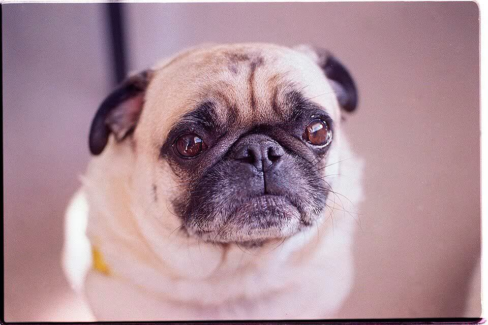
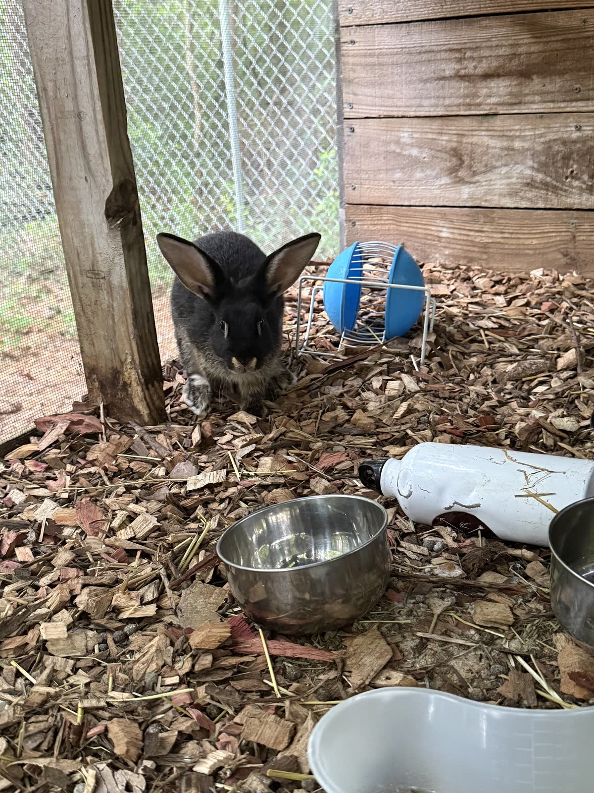

Manche Tiere werden so gezüchtet, dass ihr Körper ein lebenslanger Nachteil ist. Die Nachfrage steuert das Angebot.
Form darf nicht leidenNachfrage stoppenAdoption

Auf einen Blick
Qualzucht bedeutet: Tiere werden auf äußere Merkmale gezüchtet, die ihnen Schmerzen oder Einschränkungen verursachen.
Das Tierschutzgesetz (§ 11b TierSchG) verbietet Qualzucht – aber in der Praxis wird das Verbot nur lückenhaft durchgesetzt.
Solange Menschen Qualzucht-Rassen kaufen, werden sie gezüchtet.
Adoption aus dem Tierschutz ist die konsequenteste Alternative.
Süß ist kein Qualitätsmerkmal
Wenn ein Tier wegen seiner Körperform schlechter atmet, sieht, läuft, frisst oder lebt, ist das kein Stil. Es ist ein angezüchteter Nachteil.
Was ist Qualzucht?
Mythos
„Rassestandard heißt gesund.“
Standards beschreiben oft Aussehen. Sie garantieren nicht, dass ein Körper gut funktioniert.
Fakt
Funktion schlägt Form.
Atmung, Bewegung, Wahrnehmung und Schmerzfreiheit müssen wichtiger sein als ein niedliches Merkmal.
Qualzucht liegt vor, wenn durch Zucht körperliche Merkmale so übersteigert werden, dass das Tier darunter leidet. Das können sein: ein verkürzter Schädel, der die Atemwege verengt, deformierte Knochen, übermäßige Hautfalten oder übermäßiges Fell, funktionsuntüchtige Organe. Das Tier kann sich nicht aussuchen, wie es aussieht. Es lebt mit den Konsequenzen, die Menschen ihm angezüchtet haben.
Rassekrankheiten-Lexikon
Qualzucht und rassetypische Erkrankungen
Nicht jede Krankheit, die bei einer Rasse gehäuft auftritt, ist Qualzucht. Bei Qualzucht macht das angezüchtete Merkmal selbst krank: Die platte Nase verengt die Atemwege, das Faltohr ist ein Knorpeldefekt, die Hautfalten entzünden sich. Rassetypische Erkrankungen haben eine andere Ursache: Eine erbliche Veranlagung häuft sich in einer Rasse oder bei großen und schweren Hunden, ohne dass das Aussehen selbst das Problem wäre.
Die Grenze ist nicht immer scharf. Auch rassetypische Erkrankungen sind erblich mitbedingt, und § 11b des Tierschutzgesetzes verbietet die Zucht schon dann, wenn zu erwarten ist, dass erblich bedingt Organe für den artgemäßen Gebrauch untauglich sind und dadurch Schmerzen, Leiden oder Schäden auftreten. Für das einzelne Tier macht die Einordnung keinen Unterschied: Es leidet in beiden Fällen.
21Einträge mit Quellen: 11 Qualzucht, 10 rassetypisch
3Tierarten in den Karten: Hund, Katze und Kaninchen; ausführliche Beispiele auch zu Wellensittich, Goldfisch und Reptilien
5betroffene Körperbereiche
1klare Kaufentscheidung: Nachfrage stoppen
Tierart
Einordnung
Bereich
Qualzucht: Wenn ein Rassestandard zur Diagnose wird
Das Merkmal wurde gezüchtet, weil es besonders aussieht, und die Beschwerden gehören untrennbar dazu. Ein Merkmal, das niedlich wirkt, ist nicht harmlos, wenn es Schmerzen, Atemnot, Lahmheit, Funktionsverlust oder Organversagen verursacht.
hoch belastend
Brachyzephales Atemwegssyndrom (BOAS)
Typisch bei: Mops, Französischer Bulldogge und Englischer Bulldogge (höchstes Risiko), außerdem Pekingese und Japan Chin; in geringerem Maß Boston Terrier, Shih Tzu, Griffon Bruxellois und weitere kurzköpfige Rassen.
Ursache: Der Schädel ist verkürzt, die Weichteile in Mund und Rachen sind es nicht. Enge Nasenlöcher, ein zu langes und dickes Gaumensegel und zu große Nasenmuscheln behindern die Atmung; durch das ständig verstärkte Einatmen stülpen sich später die Kehlkopftaschen aus, und der Kehlkopf kann zusammenfallen.
Wann: oft schon jung sichtbar, nach Fachleuten häufig schon mit zwölf Monaten deutlich; verstärkt bei Aufregung, Hitze, Übergewicht und im Alter.
Wie schwer: von lauter Atmung und Schnarchen über schlechte Belastbarkeit und unruhigen Schlaf bis zu Kollaps, Operationsbedarf und Lebensgefahr bei Hitze: Das Hitzschlagrisiko ist bei der Französischen Bulldogge etwa 6,5-fach, beim Mops etwa 3,2-fach so hoch wie beim Labrador.
Wie oft: In Cambridger Untersuchungen mit freiwillig vorgestellten Hunden waren 46 bis 65 Prozent der Möpse und Französischen Bulldoggen klinisch betroffen. In britischen Tierarztakten war die Chance auf die Diagnose beim Mops rund 54-mal, bei der Französischen Bulldogge rund 31-mal so hoch wie bei anderen Hunden; als Diagnose erfasst waren aber nur etwa 5 bis 7 Prozent, weil viele Zeichen als „normal für die Rasse“ gelten.
Typisch bei: Mops (am stärksten belegt), Französischer und Englischer Bulldogge, Shih Tzu, Pekingese und anderen kurzköpfigen Rassen.
Ursache: Große, flach liegende Augen und eine weite Lidspalte gehören zum verkürzten Schädel; der Lidschluss gelingt oft nicht ganz, und der Tränenfilm verteilt sich schlecht.
Wann: schon bei jungen Hunden (betroffene Hunde waren in einer Klinikstudie im Mittel 2,8 Jahre alt); das Risiko steigt mit dem Alter, und die dunkle Hornhautverfärbung beim Mops nimmt mit den Jahren zu.
Wie schwer: Lidschluss und Tränenfilm funktionieren schlecht, die Hornhaut trocknet aus und verletzt sich leicht: Hornhautgeschwüre (bei knapp der Hälfte der betroffenen Hunde war ein Schmerzvermerk in der Akte), trockenes Auge, beim Mops dunkle Hornhautverfärbung (Pigmentkeratitis), die im schlimmsten Fall zur Blindheit führt. Bei flacher Augenhöhle reicht schon wenig Gewalt, damit der Augapfel aus der Augenhöhle rutscht: ein Biss oder Schlag, aber auch festes Halten, kräftiger Zug an der Leine oder ein Sprung von Sofa oder Möbeln (Notfall).
Wie oft: In britischen Tierarztakten hatten 5,4 von 100 Möpsen ein Hornhautgeschwür. Die Chance war beim Mops rund 19-fach, beim Shih Tzu rund 10-fach, bei der Englischen Bulldogge rund 8-fach und bei der Französischen Bulldogge rund 7-fach so hoch wie bei Mischlingen. Von 210 untersuchten Möpsen hatten 193 (rund 92 Prozent) Pigmentkeratitis in mindestens einem Auge (Gruppe von Hundeschauen, meist leicht bis mäßig). Das trockene Auge hatte bei der Englischen Bulldogge eine rund 38-fach, beim Mops eine rund 22-fach höhere Chance.
Typisch bei: Dackeln, Corgis, Französischen Bulldoggen und anderen Hunden mit kurzen Beinen und veränderter Knorpelentwicklung (chondrodystrophe Rassen); nach einer Genstudie auch Beagle, Cocker Spaniel, Lhasa Apso, Pekingese und Shih Tzu.
Ursache: Ein zusätzliches Gen auf Chromosom 12 (FGF4) verändert den Knorpel: Es führt zu kurzen Beinen und zu Bandscheibenerkrankungen. Es kommt bei der Französischen Bulldogge sehr häufig vor.
Wann: Französische Bulldoggen waren bei einem Bandscheibenvorfall im Mittel 46 Monate alt, also knapp vier Jahre, und damit jünger als Dackel (70 Monate) und Englische Cocker Spaniels (92 Monate); der Vorfall tritt teils plötzlich auf.
Wie schwer: Rückenmark und Nerven werden gedrückt; bei Französischen Bulldoggen mit einem Vorfall im Bereich von Brust- und Lendenwirbeln konnten 77 Prozent bei der Vorstellung nicht mehr selbstständig gehen. Bei dieser Rasse lag der Vorfall in 30 Prozent am Hals und in 54 Prozent im Bereich der Brust- und Lendenwirbel.
Wie oft: In einem französischen Überweisungszentrum war der Bandscheibenvorfall mit 45,5 Prozent die häufigste neurologische Diagnose bei Französischen Bulldoggen. Das sind Klinikzahlen und kein Anteil in der Gesamtbevölkerung; in einer Befragung deutscher Halter nannten 18 Prozent der Halter einen Bandscheibenvorfall.
Ursache: Die Chiari-ähnliche Fehlbildung ist ein Missverhältnis zwischen Gehirn und Schädel; sie gilt beim Cavalier als in der Rasse allgegenwärtig. Mit ihr hängen Flüssigkeitshohlräume im Rückenmark (Syringomyelie) zusammen; in einer Untersuchung lag die Erblichkeit bei 0,81 (auf einer Skala von 0 bis 1; je näher an 1, desto stärker ist das Merkmal erblich).
Wann: Der Hohlraum im Rückenmark entsteht oft schon früh: Im MRT zeigte er sich bei 25 Prozent der einjährigen Cavaliere ohne gemeldete Beschwerden. Beschwerden fallen nach UFAW meist erst ab etwa zweieinhalb Jahren auf und können mit der Zeit stärker werden.
Wie schwer: Bei 130 Cavalieren, die in Überweisungskliniken ein MRT bekamen (eher schwere Fälle), waren die häufigsten Zeichen Aufjaulen (65 Prozent), Rückenschmerz (55 Prozent), weniger Aktivität (38 Prozent), Scheu vor Treppen und Springen (35 Prozent), Berührungsscheu (30 Prozent), veränderte Gemütslage (29 Prozent) und Schlafstörung (22 Prozent). Kratzen in der Luft, Schiefhals und Schwäche kamen nur bei größeren Hohlräumen vor. Nach UFAW kann die Erkrankung lebenslangen, teils starken Schmerz verursachen.
Wie oft: Im MRT hatten bei Hunden ohne gemeldete Beschwerden 25 Prozent der einjährigen und bis zu 70 Prozent der Cavaliere ab sechs Jahren einen Hohlraum; ein Befund im Bild bedeutet nicht, dass der Hund Schmerzen hat. Beschwerden hatten nach einer dänischen Halterbefragung 15,4 Prozent der über sechsjährigen Hunde; in britischen Tierarztakten waren es 1,6 Prozent mit gestellter Diagnose, vermutlich zu wenig, weil nur wenige Hunde ein MRT bekommen.
Weiteres: Beim Cavalier kommen außerdem Herzklappenerkrankungen (eigene Karte unten), Flüssigkeit im Mittelohr (bei 28 bis 54 Prozent der untersuchten Hunde, nicht repräsentativ) und angeborenes trockenes Auge mit Schuppenhaut vor; bei 10 Prozent der Cavaliere mit Chiari-Fehlbildung fand sich zusätzlich ein brachyzephales Atemwegssyndrom.
Typisch bei: Shar Pei, Englischer und Französischer Bulldogge, Mops, Basset Hound und anderen Rassen mit extremen Hautfalten.
Ursache: Beim Shar Pei bewirkt eine Genveränderung nahe dem Gen HAS2 übermäßig viel Hyaluronsäure in der Haut; fast jeder Shar Pei ist in gewissem Maß davon betroffen. Dieselbe Veränderung geht mit wiederkehrenden Fieberschüben einher.
Wann: häufig schon bei jungen Tieren (Shar-Pei-Welpen haben mehr Falten); bei vielen Shar Pei bleiben Probleme am Kopf und im Gesicht auch im Erwachsenenalter.
Wie schwer: Hautentzündung von leicht bis zu tiefen, schmerzhaften Geschwüren, Geruch, Entropium (nach innen gedrehte Lider) mit Reizung der Hornhaut; beim Shar Pei außerdem Fieber, das bis etwa 41,7 Grad (107 °F) erreichen kann und 12 bis 36 Stunden dauert, und auf Dauer Eiweißablagerungen (Amyloid) in den Nieren, die zum Nierenversagen führen können.
Wie oft:Hautfaltendermatitis: Im Vergleich mit Mischlingen war die Chance bei Englischen Bulldoggen 49-fach, bei Französischen Bulldoggen 26-fach, beim Mops 16-fach und beim Shar Pei 5-fach so hoch (nur 9 Fälle, unsicher); als Jahresanteil waren es in britischen Akten 6,1, 2,7 und 2,1 Prozent, vermutlich zu niedrig. Von den Shar Pei bekamen 2013 in britischen Praxen 17,9 Prozent die Diagnose Entropium, 3,0 Prozent Shar-Pei-Fieber; Nierenerkrankungen waren bei 13 Prozent der Hunde mit bekannter Ursache die Todesursache.
Typisch bei: Dalmatinern, Merle-Doppelträgern (Hunde mit zwei Merle-Genen, meist fast ganz weiß) und Hunden verschiedener Rassen mit sehr viel Weiß.
Wann: Die Taubheit entsteht in den ersten Lebenswochen, weil ein Teil der Blutversorgung der Hörschnecke abstirbt; getestet wird mit dem BAER-Test (er misst die Hirnströme beim Hören) frühestens mit etwa fünf Wochen. Ohne Test wird einseitige Taubheit leicht übersehen, weil diese Hunde normal zu hören scheinen.
Wie schwer: Nach der Louisiana State University (LSU) können beidseitig taube Hunde schwer zu erziehen sein, sich beim Erschrecken zu Bissen verleiten lassen und im Straßenverkehr umkommen; viele Menschen halten taube Hunde aber erfolgreich, und die Frage ist umstritten. Einseitig taube Hunde sollten nicht gezüchtet werden, weil sie die Veranlagung genauso weitergeben können. Merle-Doppelträger sind oft auch blind oder haben Augenfehlbildungen.
Wie oft: Beim Dalmatiner waren in den USA rund 8 Prozent der Hunde auf beiden Ohren und rund 22 Prozent auf einem Ohr taub; in Ländern, die blaue Augen im Standard nicht zulassen, liegen die Werte niedriger. Bei Merle-Hunden mit einem Merle-Gen waren 0,9 Prozent beidseitig und 2,7 Prozent einseitig taub, bei Doppelträgern 15 Prozent beidseitig und 10 Prozent einseitig (153 Hunde, kleine Stichprobe).
Ursache: Die Taubheit hängt am gewünschten Aussehen: Beim Dalmatiner waren blaue Augen mit Taubheit verbunden, ein Fleck (Platte) im Fell dagegen eher nicht. Das Gutachten von 1999 nennt bei Merle-Weißtigern regelmäßig Sinnesorganstörungen und empfiehlt ein Zuchtverbot für Merle-mal-Merle-Verpaarungen.
Typisch bei: Scottish Fold; das Faltohr ist selbst Teil des Knorpeldefekts.
Ursache: Dieselbe Genveränderung (im Gen TRPV4) macht das Faltohr und die Knorpelerkrankung; sie wird dominant vererbt, schon eine Kopie reicht. Wie stark die Ohren gefaltet sind, sagt nichts Verlässliches darüber, wie schwer eine Katze erkrankt.
Wann: Bei Katzen mit zwei Kopien können Röntgenveränderungen nach der Österreichischen Qualzuchtkommission schon ab sieben Wochen auftreten; bei Katzen mit einer Kopie sind die Veränderungen milder. Die Erkrankung schreitet fort und ist nicht heilbar.
Wie schwer: Bewegungsunlust, steifer Gang, Lahmheiten, verformte Gliedmaßen und ein steifer, schmerzempfindlicher Schwanz, fortschreitende Gelenkzerstörung; bei stark betroffenen Tieren auch Beschwerden beim Kot- und Harnabsatz und bei der Atmung.
Wie oft: Alle untersuchten Faltohrkatzen trugen die Veränderung. Katzen mit zwei Kopien sind früh und schwer betroffen. Bei Katzen mit einer Kopie waren in einer Röntgenstudie an zehn erwachsenen Zuchtkatzen bei 90 bis 100 Prozent milde Zeichen zu erkennen (laut Qualzuchtkommission); klinisch erkrankt war 1 von 12 untersuchten Katzen in Italien, und in australischen Praxisdaten war bei 1,1 Prozent der Scottish Folds eine Osteochondrodysplasie diagnostiziert, bei weiteren 5,7 Prozent bestand der Verdacht (vermutlich unterschätzt).
Einschätzung: Das Gutachten des Bundesministeriums empfahl schon 1999 ein Zuchtverbot für Katzen mit dem Faltohr-Gen. Die Österreichische Qualzuchtkommission hat ein sofortiges Zuchtverbot empfohlen; sie berät die Politik, ein Gesetz ist die Empfehlung nicht. In den Niederlanden ist die Zucht verboten, seit 1. Januar 2026 dürfen Faltohrkatzen dort außerdem nicht mehr neu gehalten und nicht ausgestellt werden; in Flandern sind Zucht und Verkauf seit 1. Oktober 2021 verboten.
Typisch bei: Perser, Exotic Shorthair und extrem flachgesichtigen Linien („Peke-Face“).
Ursache: Der Gesichtsschädel ist verkürzt; dadurch werden Nase und Tränenkanal eng, die Zähne stehen schief, und die Augen liegen flach.
Wann: ab jungem Alter sichtbar; Augen, Atmung und Zähne bleiben lebenslang Thema.
Wie schwer: Atemgeräusche und Atemprobleme (nach Halterangaben), Tränenfluss und verletzliche Augen (Hornhautgeschwüre, Hornhautsequester), Zahnfehlstellungen und Zahnerkrankungen, Fressprobleme, bei extremen Linien ein Wasserkopf: In einer Untersuchung hatte etwa jede dritte „Peke-Face“-Katze einen klinisch erkennbaren.
Wie oft: Je flacher das Gesicht, desto häufiger und schwerer die Probleme; einzelne Perser haben Messwerte wie Hauskatzen. In britischen Praxisdaten zu 3.235 Persern waren Haarkleid-Probleme (12,7 Prozent), Zahnfleisch- und Zahnbetterkrankungen (11,3 Prozent) und Augenausfluss (5,8 Prozent) die häufigsten Diagnosen. Atemwegs-, Nerven- und Geburtsprobleme, die ältere Arbeiten nannten, ließen sich dort nicht bestätigen; die Studie erfasst allerdings keine Atemgeräusche, die Halter für normal halten. Bei 72 Prozent von 50 untersuchten Persern und Exotics fanden sich Zahnfehlstellungen.
Typisch bei: Sphynx und anderen haarlosen Linien; fehlende oder gekräuselte Tasthaare nennt das Gutachten vor allem bei Devon Rex und Sphynx.
Ursache: Nach dem Urteil des Verwaltungsgerichts Berlin wird die Haarlosigkeit erst bei zwei Kopien der Veränderung ausgeprägt (rezessiv vererbt).
Wann: ab Geburt; Schutz- und Sinnesfunktionen fehlen oder sind eingeschränkt.
Wie schwer: Tasthaare sind nach dem Gutachten ein wesentliches Sinnesorgan der Katze: Sie helfen vor allem im Dunkeln bei der Orientierung, beim Fangen und Abtasten der Beute und beim Untersuchen von Gegenständen. Bei 26 von 32 untersuchten Sphynx fand man Hefepilze der Gattung Malassezia auf der Haut, bei keiner von 10 Hauskatzen; 5 der 32 hatten fettige Seborrhoe. Nach der Qualzucht-Datenbank QUEN führt Sonne auf der ungeschützten Haut häufig zum Sonnenbrand, und die Temperaturregelung ist gestört; belegt ist das nur über diese Quelle.
Wie oft: bei diesen Linien die Regel, wenn Haarlosigkeit oder fehlende Tasthaare Zuchtziel sind. Das Verwaltungsgericht Berlin hat 2015 über ein Zuchtverbot bei Sphynx-Katzen entschieden und festgestellt, dass den Tieren der Züchterin funktionsfähige Tasthaare fehlten und dass es sich dabei nicht um eine bloß optische Abweichung handelt (Az. 24 K 202.14). Das Gutachten von 1999 empfiehlt ein Zuchtverbot für Katzen, bei denen die Tasthaare fehlen.
Hinweis: Die Herzmuskelerkrankung HCM ist bei Sphynx-Katzen ebenfalls häufig (bei 23 von 114 zur Herzvorsorge vorgestellten Tieren, einer Auswahl), hängt aber nicht an der Haarlosigkeit und steht deshalb bei den rassetypischen Erkrankungen.
Typisch bei: Manx und schwanzlosen Linien; besonders betroffen sind laut Gutachten die Typen „rumpy“ (ganz schwanzlos) und „stumpy“ (Stummelschwanz).
Ursache: Das Gen, das den Schwanz verkürzt oder weglässt, stört gleichzeitig die Entwicklung von Wirbelsäule und Rückenmark im hinteren Körperabschnitt. Alle Manx-Katzen tragen eine Kopie; Katzen mit zwei Kopien sterben früh im Mutterleib.
Wann: von Geburt an oder in den Wochen und Monaten danach; schwer betroffene Tiere sterben nach UFAW schon im Mutterleib oder werden früh eingeschläfert.
Wie schwer: Spina bifida (offener Rücken), ein hoppelnder Gang, fehlendes Gefühl in den Hinterbeinen und am Damm, Kot- und Harninkontinenz (das Tier kann Kot und Urin nicht halten), Rektumvorfall und Fehlbildungen des Enddarms. Eine wirksame Behandlung gibt es meist nicht, die Erkrankung besteht lebenslang.
Wie oft: Spina bifida ist beim Manx nach UFAW häufig, am häufigsten bei den ganz schwanzlosen „rumpy“-Katzen. Nach der Qualzucht-Datenbank QUEN zeigten in Studien an 259 und 495 Manx-Katzen 18 und 21 Prozent einen zusätzlichen körperlichen Defekt, und bei der Hälfte der „rumpy“-Katzen war Harninkontinenz zu beobachten; die zugrunde liegenden Studien sind nicht geprüft. Das Gutachten von 1999 empfiehlt ein Zuchtverbot, weil bei Manx-mal-Manx- wie bei Manx-mal-Nichtmanx-Verpaarungen mit Missbildungen der Nachzucht zu rechnen ist.
Typisch bei: Widderkaninchen und anderen Kaninchen mit Hängeohren; der abgeknickte, enge Gehörgang gehört zum Hängeohr.
Ursache: Zwischen zwei Ohrknorpeln liegt eine Lücke aus Weichgewebe, das Ohr knickt ab, und mit ihm der Gehörgang. Ohrenschmalz und Entzündungsflüssigkeit fließen schlecht ab.
Wann: Der Bau des Ohres ist von Anfang an so; Ohrerkrankungen kommen mit steigendem Alter häufiger vor.
Wie schwer: Ohrenentzündungen bis ins Mittelohr, Schmerzen, mögliche Schwerhörigkeit bis Taubheit. Viele Tiere zeigen kaum Zeichen, obwohl das Ohr entzündet ist: In einer CT-Untersuchung an 88 Kaninchen hatten 27 Prozent der Tiere ohne Ohrbeschwerden Veränderungen im Mittelohr.
Wie oft: In einer britischen Halterumfrage hatten rund 25 Prozent der Hängeohrkaninchen ein tierärztlich festgestelltes Ohrproblem, bei Kaninchen mit Stehohren rund 10 Prozent; Schwerhörigkeit oder Taubheit wurde bei Hängeohrkaninchen rund 19-mal wahrscheinlicher angegeben (ohne Hörtest). In einem Tierheim hatten 13 von 15 Hängeohr- und 2 von 15 Stehohrkaninchen einen verengten Gehörgang. Das alles sind keine Zufallsstichproben. Eine sehr große Auswertung britischer Praxisdaten (162.107 Kaninchen) fand dagegen nur begrenzte Hinweise auf einen Zusammenhang zwischen Ohrhaltung und allgemeinem Krankheitsrisiko; Ohrenerkrankungen werden in ihrer Zusammenfassung nicht als erhöht genannt.
Einschätzung: Das Merkblatt der Qualzucht-Datenbank QUEN sieht den Verdacht einer Qualzucht. Ob auch die Zähne betroffen sind, ist widersprüchlich: Die Tierheimstudie fand mehr Zahnprobleme, zwei große Untersuchungen (161.979 Kaninchen aus Praxen, 435 Rassekaninchen) fanden keinen Zusammenhang. Mehr dazu im Abschnitt „Widderkaninchen“ unten.
Rassetypische Erkrankungen: Wenn sich eine Krankheit in einer Rasse häuft
Hier ist nicht das Aussehen der Auslöser, sondern eine erbliche Veranlagung, die sich in einer Rasse oder bei großen und schweren Hunden häuft. Viele dieser Krankheiten tun weh, und Schmerz zeigt sich bei Hunden oft als verändertes Verhalten. Bei etwa einem Drittel der Hunde, die wegen Verhaltensproblemen zu Fachleuten überwiesen werden, spielte nach rund 100 Fällen der Autoren eine schmerzhafte Erkrankung mit. Das ist eine Einschätzung aus diesen Fällen, keine repräsentative Studie (Mills et al. 2020).
häufig schmerzhaft
Hüftdysplasie
Typisch bei: großen und schweren Rassen, etwa Labrador, Golden Retriever, Deutscher Schäferhund, Rottweiler.
Wann: Wachstum bis Erwachsenenalter; Arthrose oft lebenslang. Viele Hunde zeigen die ersten Zeichen schon mit sechs bis zwölf Monaten, manche erst später.
Wie schwer: Lahmheit, Schmerzen, eingeschränkte Bewegung, teure Diagnostik und Therapie.
Wie oft: je nach Rasse und Zuchtlinie stark unterschiedlich. In der Datenbank der Orthopedic Foundation for Animals (freiwillig eingereichte Röntgenbilder, 1970 bis 2015) hatten 20,1 Prozent der Rottweiler und 18,9 Prozent der Deutschen Schäferhunde eine Hüftdysplasie.
Ursache: Das Hüftgelenk entwickelt sich falsch: Hüftpfanne und Oberschenkelkopf passen nicht zusammen, das Gelenk ist locker und nutzt sich ab, bis Arthrose entsteht. Vererbt wird die Anlage. Ob und wie stark sie sich zeigt, hängt auch vom Wachstum ab: Überfütterung und zu schnelles Wachstum im Junghundealter verschlechtern die Hüfte, ebenso spielen Ernährung und Bewegung hinein. Bei Labradorwelpen, die ein Viertel weniger fraßen, war die Arthrose in den Hüftgelenken später seltener und weniger schwer.
Vorsorge: Wo seit Jahrzehnten nach Röntgenbefund der Hüfte gezüchtet wird, ist die Hüftform in vielen Rassen besser geworden. Ausschließen lässt sich die Erkrankung dadurch nicht: Auch ein Hund mit gesunden Hüften kann Welpen mit Hüftdysplasie haben.
Gilt als: Altersschwäche: In einer britischen Befragung hielten 78 Prozent der Halterinnen und Halter es für einen normalen Teil des Alterns, wenn ein Hund auf Spaziergängen langsamer wird (Universität Liverpool).
Dahinter steckt: Viele Hunde mit Hüftdysplasie lahmen nach dem Toben, hoppeln beim Rennen mit beiden Hinterbeinen gleichzeitig wie ein Hase, zögern beim Aufstehen und Springen und sind weniger aktiv als andere Welpen (Texas A&M, Cornell). Ein Hund, der nicht mehr ins Auto springen mag oder ungern aufsteht, kann also Schmerzen haben. Schmerz im Bewegungsapparat kann auch das Verhalten verändern: Als Folge beschrieben sind Aggression, oft wenn sich jemand dem Hund nähert, besonders im Liegen, und bei Hüftdysplasie das Verteidigen von Dingen, auch des Wassernapfs (Mills et al. 2020, Animals).
Typisch bei: Labrador, Golden Retriever, Rottweiler, Berner Sennenhund und weiteren großen Rassen.
Wann: oft schon mit vier bis zehn Monaten, manchmal früher; später oft Arthrose. Bei leichten Formen zeigt sich die Lahmheit teils erst mit sieben oder acht Jahren.
Wie schwer: Lahmheit, chronische Schmerzen, Bewegungseinschränkung.
Wie oft: Bei Labradoren gehen nach UFAW etwa 45 bis 77 Prozent des Erkrankungsrisikos auf die Gene zurück, und zwischen den Zuchtlinien gibt es große Unterschiede. Auch Hunde mit gesunden Eltern können erkranken; Untersuchungen der Zuchttiere senken das Risiko.
Gilt als: Labrador: eine äußerst aktive Rasse, die täglich viel Bewegung und Beschäftigung braucht (Rassebeschreibung zooroyal).
Dahinter steckt: Beim Hund mit Ellbogendysplasie ist ausgerechnet Bewegung schmerzhaft. Typisch sind Lahmheit, die nach Anstrengung schlimmer wird, und Steifheit nach dem Ruhen (UFAW). Kommt Arthrose dazu, sind verringerte Aktivität, Zögern bei Treppen und Sprüngen auf das Sofa sowie plötzliche Reizbarkeit oder Aggression mögliche Zeichen (Cornell, Arthrose). Ein sonst bewegungsfreudiger Labrador, der plötzlich bremst oder gereizt reagiert, ist deshalb nicht einfach schlecht gelaunt, sondern hat vielleicht Schmerzen.
Typisch bei: Toy- und Kleinhunderassen wie Zwergpudel, Yorkshire Terrier, Chihuahua und Zwergspitz.
Wann: jung bis erwachsen; oft zeigt sich das Problem zunächst nur zeitweise, etwa durch Hüpfen oder Schonen eines Beins.
Wie schwer: von leichter Lahmheit bis dauerhaften Knieschäden und OP-Bedarf.
Wie oft: bei kleinen Rassen häufiger als bei großen; die genetische Veranlagung spielt eine bedeutende Rolle. Je weiter die Erkrankung fortschreitet, desto leichter und öfter springt die Kniescheibe heraus.
Gilt als: eine Marotte: Das kurze Hüpfen auf drei Beinen hält man leicht dafür, und weil es von selbst wieder verschwindet, wird es oft übersehen (Tierärzteteam Hansavet).
Dahinter steckt: Die Kniescheibe springt aus ihrer Rinne und rutscht nach einigen Schritten zurück, danach läuft der Hund wieder normal (Cornell). Bei jedem Herausspringen leidet aber der Knorpel; ohne Behandlung drohen Arthrose und ein erhöhtes Risiko für einen Kreuzbandriss. Manche Hunde schreien beim Springen auf, sind berührungsempfindlich und meiden Sprünge und Treppen (Hansavet). Ein kleiner Hund, der nicht mehr aufs Sofa hüpft, ist deshalb nicht unbedingt bequem geworden.
Typisch bei: Cavalier King Charles Spaniel, außerdem bei kleinen älteren Hunden.
Wann: beim Cavalier früher als bei anderen Rassen: Ein Herzgeräusch lässt sich oft schon mit drei bis fünf Jahren feststellen. Kontrollen gehören in die Zucht.
Wie schwer: Herzgeräusch, Husten, Leistungsschwäche, Herzinsuffizienz.
Wie oft: beim Cavalier etwa 20-mal häufiger als bei anderen Hunden; fast jeder Halter erlebt die Erkrankung, wenn der Hund lange genug lebt.
Dahinter steckt: Solange die Herzklappe nur undicht ist, wirken die Hunde gesund. Kommt es zur Herzschwäche, werden sie schnell müde, husten und atmen auch in Ruhe schwer, und manche wollen sich nicht mehr hinlegen, weil das auf den Brustkorb drückt (UFAW). Ein Cavalier, der schneller schlappmacht, hustet oder sich nicht mehr hinlegen mag, ist deshalb nicht einfach gemütlich geworden.
Typisch bei: Dobermann, Deutsche Dogge, Neufundländer, Rottweiler und weiteren großen Rassen.
Wann: oft erwachsen; lange unauffällig, bis Rhythmusstörungen oder Herzschwäche sichtbar werden. Beim Dobermann dauert diese stille Phase typischerweise vom zweiten bis zum sechsten Lebensjahr.
Wie schwer: Leistungsschwäche, Wasseransammlungen, Ohnmacht, plötzlicher Tod.
Wie oft: bei einzelnen Rassen so relevant, dass Ultraschall und 24-Stunden-EKG zur verantwortlichen Zuchtkontrolle gehören; beim Neufundländer wurde die Erkrankung bei etwa 10 Prozent der Hunde gefunden.
Gilt als: Deutsche Dogge: ein sanfter, menschenbezogener Familienhund mit ruhigem Wesen, der im Haus eher ruhig und ausgeglichen ist (Rasseporträt santevet).
Dahinter steckt: Das Wesen sagt nichts über das Herz. Beim Dobermann zeigen die Tiere oft jahrelang keine Anzeichen, und dann kommen Schwächeanfälle, Kollaps oder der plötzliche Tod durch Herzrhythmusstörungen (UFAW Dobermann). Bei Herzschwäche sammelt sich Flüssigkeit in der Lunge, es kommt zu Atemnot und Husten (UFAW Neufundländer). Deshalb gehören bei gefährdeten Rassen Ultraschall und Langzeit-EKG zur Vorsorge, auch wenn der Hund völlig gesund wirkt.
Typisch bei: Deutschem Schäferhund, Corgi, Boxer und weiteren Rassen.
Wann: meist im Erwachsenen- bis Seniorenalter; erste Zeichen sind oft Schwäche in den Hinterbeinen und Stolpern. Beim Schäferhund beginnt es typischerweise mit acht bis neun Jahren.
Wie schwer: fortschreitender Verlust von Beweglichkeit und normaler Funktion bis zur Lähmung.
Wie oft: bei betroffenen Rassen so verbreitet, dass Gentests und die Auswahl der Zuchttiere eine Rolle spielen. Die Veranlagung (Veränderung im Gen SOD1) wird rezessiv vererbt, und nicht jeder Hund mit zwei Kopien erkrankt.
Gilt als: Arthrose oder ein Hüftleiden: Die ersten Zeichen kommen schleichend und ähneln diesen Erkrankungen, deshalb wird die Degenerative Myelopathie leicht für ein orthopädisches Problem gehalten (UFAW Schäferhund, VCA).
Dahinter steckt: Hier ist das Rückenmark betroffen, nicht das Gelenk. Erste Zeichen sind eine schwankende Hinterhand, Umknicken der Hinterpfoten und Mühe beim Aufstehen. Die Erkrankung tut nach Fachangaben nicht weh, die Hunde werden einfach schwach (VCA, UFAW Corgi). Wer bei einem Schäferhund mit nachlassender Hinterhand nur an Alter oder Hüfte denkt, übersieht sie. Eine neurologische Untersuchung und der Gentest klären es.
Typisch bei: Persern und Katzen mit Perser-Abstammung.
Wann: angeboren, Symptome oft erst später, meist mit über sieben Jahren: Durst, Gewichtsverlust, Nierenwerte.
Wie schwer: fortschreitende Nierenschädigung bis Nierenversagen.
Wie oft: In Untersuchungen aus den 1990er- und frühen 2000er-Jahren hatte rund jeder dritte bis zweite untersuchte Perser Nierenzysten (36 bis 49 Prozent; die britische Zahl von 49 Prozent stammt aus nur 132 Hochrisiko-Persern). Durch Tests vor der Zucht ist der Anteil in Großbritannien stark gesunken, von rund 28 Prozent im Jahr 2005 auf rund 2 Prozent im Jahr 2016 (Langford Veterinary Diagnostics, zitiert bei O’Neill u. a. 2019); in einer iranischen Klinik hatten dagegen 36,8 Prozent von 76 Katzen die Erkrankung. Ultraschall (ab etwa zehn Monaten) und DNA-Test erkennen sie; vereinzelt wurden Zysten auch ohne die bekannte Genveränderung beschrieben.
Ursache: Schon eine Kopie der Genveränderung (PKD1) reicht für die Zysten. Gesunde Träger gibt es deshalb nicht.
Gilt als: ein Alterszipperlein: Gewichtsverlust, ein Fell, das ungepflegt wirkt, wechselnder Appetit und mehr Trinken und Urinieren tut man bei älteren Katzen leicht als normales Altern ab (VCA, chronische Nierenerkrankung).
Dahinter steckt: Bei Katzen mit PKD bilden sich Zysten in den Nieren, die Beschwerden kommen oft erst nach dem Zuchtalter. Dann folgen mehr Durst und Urin, Muskelschwäche und Erbrechen; die Katze mag sich nicht bewegen und frisst wenig (UFAW). Eine Perserin, die im Alter mehr trinkt, abnimmt und weniger herumläuft, ist also nicht einfach alt geworden, sondern braucht Nierenwerte und einen Ultraschall.
Typisch bei: Maine Coon, Ragdoll, Sphynx und weiteren Rassekatzen.
Wann: jung bis erwachsen; Träger können lange unauffällig wirken.
Wie schwer: Herzvergrößerung, Blutgerinnsel (Thrombosen), Herzversagen, plötzlicher Tod.
Wie oft: bekannte rassespezifische Genveränderungen; nicht jede Katze mit einer solchen Veränderung erkrankt, und ein Gentest ersetzt keinen Herzultraschall.
Dahinter steckt: Viele Katzen mit HCM wirken nicht krank. Bei Herzschwäche atmen sie angestrengt, schnell oder mit offenem Maul und sind schlapp. Ein Blutgerinnsel kann plötzlich die Durchblutung der Hinterbeine abschneiden, das bedeutet starken Schmerz oder sogar eine Lähmung (Cornell Feline Health Center). Dass eine Maine Coon ruhig und anschmiegsam ist, sagt über ihr Herz nichts. Unerkannt kann die Erkrankung bis zum plötzlichen Herztod führen (zooroyal).
Typisch bei: Abessinier, Somali, Perser, Bengal und weiteren Rassekatzen mit bekannten Varianten.
Wann: je nach Variante sehr früh oder später; anfangs kann die Katze unauffällig wirken.
Wie schwer: fortschreitender Netzhautabbau bis zur Blindheit.
Wie oft: Für Abessinier und Perser gibt es DNA-Tests. Betroffene Katzen sowie ihre Eltern und Geschwister gehören nicht in die Zucht, weil gesunde Verwandte Träger sein können.
Gilt als: verspielt, neugierig, sehr aufmerksam und mit hohem Bewegungsdrang, so die Beschreibung des Abessiniers (Rassebeschreibung Fressnapf).
Dahinter steckt: Zuerst lässt das Sehen im Dunkeln nach. Weil die Erkrankung nicht wehtut, fällt sie im Anfangsstadium kaum auf. Betroffene Katzen sind nachts nervös, zögern, dunkle Räume zu betreten, oder stoßen in schwachem Licht gegen Gegenstände; die Pupillen sind weiter als normal (VCA). Auch Rückzug in der Nacht und Scheu vor Treppen werden beschrieben (International Cat Care). Kennt die Katze nur die vertraute Wohnung, bleibt es oft unbemerkt, bis sie fast erblindet ist. Eine Katze, die abends ängstlich wirkt oder Treppen meidet, kann also schlecht sehen.
Wann: jung; Schwäche zeigt sich besonders nach Anstrengung.
Wie schwer: Muskelerschöpfung, auffällige Haltung, Belastungsprobleme, eingeschränkte normale Bewegung. Die Schwere schwankt von Katze zu Katze.
Wie oft: wird rezessiv vererbt: Werden zwei Trägertiere verpaart, sind betroffene Kitten zu erwarten. Ein DNA-Test erkennt Träger.
Gilt als: Devon Rex: sportlich, aktiv, tobt ausgelassen herum und klettert auf Kratzbäume (Rassebeschreibung zooplus).
Dahinter steckt: Bei erkrankten Katzen fehlt die Kraft dafür. Sie ermüden bei Anstrengung rasch, Kopf und Hals sinken nach unten, und die Speiseröhre ist erweitert (Gandolfi et al. 2015). Bei einem Sphynx-Kitten wurden nach dem Spielen kürzere Schritte, zitternde Beine und eine Haltung wie bei einem bettelnden Hund beschrieben, dazu gelegentliches Würgen beim Fressen (Abitbol et al. 2015). Eine Katze, die schnell aufgibt oder sich nach kurzem Toben hinsetzt, ist deshalb nicht unbedingt faul.
Wichtig: „Rassekrankheit“ heißt nicht, dass jedes einzelne Tier sichtbar krank ist. Es heißt: Die Zuchtlinie trägt ein erhöhtes oder angezüchtetes Risiko. Wer ein Tier kaufen will, sollte sich deshalb nicht mit dem Satz „Unserer atmet gut“ zufriedengeben. Wichtig sind unabhängige Untersuchungen, die Gesundheitsdaten der Elterntiere und die Frage, ob dieses Merkmal überhaupt weitergezüchtet werden sollte.
Die bekanntesten Beispiele
AtmungRöcheln, Schnarchen und schnelle Erschöpfung sind keine niedlichen Rassemerkmale.BewegungWenn Knochen, Gelenke oder Körperform normale Bewegung verhindern, ist Schönheit Leid.WahrnehmungFell, Augen, Ohren oder Kopfgefieder dürfen Sicht, Hören und Alltag nicht behindern.
Was bei diesen Tieren als liebenswerte Eigenart gilt, ist oft ein Krankheitszeichen. Unter den meisten Beispielen steht deshalb, was der Rasse gern zugeschrieben wird, und was nach Einschätzung von Fachleuten dahintersteckt.
Die Zahlen stammen aus Studien, die jeweils nur einen Ausschnitt zeigen, meist Tiere, die in Tierarztpraxen oder Kliniken vorgestellt wurden. Sie zeigen, wie oft etwas bei diesen Tieren vorkommt, nicht, wie es jedem einzelnen Tier geht.
Mops und Französische Bulldogge (Brachyzephalie)
Warum schnarcht ein Mops, und warum sieht sein Gesicht so aus? Beides hängt zusammen. Bei Mops und Französischer Bulldogge ist der Schädel so stark verkürzt, dass vieles, was dahinter liegt, nicht mehr passt: Nase, Rachen, Augen, Ohren, Zähne, Wirbelsäule und Haut sind betroffen. Die britische Untersuchung von Tierarztakten, auf die sich viele Zahlen unten stützen, kommt beim Mops zu dem Schluss, er könne gesundheitlich nicht mehr als typischer Hund gelten (O’Neill u. a. 2022). Nicht jedes Tier hat jedes der Probleme unten; die Zahlen zeigen, wie häufig etwas vorkommt und wie stark sich die beiden Rassen von anderen Hunden unterscheiden. Mops und Französische Bulldogge sind dabei nicht dasselbe: Wo eine Untersuchung nur eine der beiden Rassen betrifft, steht das dabei. Es geht hier um die Zucht, nicht um deine Haltung.
Gilt als: gemütlich, ruhig und anhänglich; über das Schnarchen wird oft gelacht (Rassebeschreibung Mops, Rassebeschreibung Französische Bulldogge). Dahinter steckt: Schnarchgeräusche sind bei diesen Hunden ein häufiges Zeichen des brachyzephalen Atemwegssyndroms, also der Atemnot durch zu enge Atemwege. Nach den Merkblättern der Qualzucht-Datenbank QUEN schlafen betroffene Hunde mitunter nur in bestimmten Positionen, leiden an Schlafapnoe (Atemaussetzern im Schlaf) und brauchen schon nach kurzer Aktivität lange Erholung. Das „gemütliche“ Ausruhen kann deshalb Erschöpfung sein (QUEN Mops, QUEN Französische Bulldogge).
Vor dem Kauf: In den Niederlanden verstößt eine Zucht nach einer Regel von 2023 schon dann gegen das Zuchtverbot, wenn bei einem Elterntier ein einziges von mehreren Merkmalen vorliegt, zum Beispiel Atemgeräusch in Ruhe, deutlich verengte Nasenöffnungen, eine Nasenfalte mit Kontakt zur Hornhaut oder ein Lid, das sich nicht ganz schließen lässt. Das sind Dinge, die du bei Elterntieren selbst sehen und hören kannst. Frag den Anbieter, wie es den Elterntieren damit geht, und lass dir ihre Gesundheitsdaten zeigen. Auf „Unserer atmet gut“ und „Das ist normal für die Rasse“ solltest du dich nicht verlassen.
Mittleres Sterbealter (britische Praxen; alle Hunde: 11,2 Jahre)
7,7 Jahre
4,5 Jahre
Nur beim Mops untersucht: dunkle Hornhautverfärbung
92 Prozent von 210
nicht untersucht
Nur bei der Französischen Bulldogge genannt: Bandscheibenvorfall als häufigste neurologische Diagnose in einer Klinik
nicht genannt
45,5 Prozent
Die Werte stammen aus verschiedenen Untersuchungen mit verschiedenen Hunden und sind nicht Zeile für Zeile vergleichbar. Eine „Chance“ ist hier das statistische Chancenverhältnis: Eine 19-fach höhere Chance heißt, dass die Diagnose in der Auswertung sehr viel öfter gestellt wurde als bei der Vergleichsgruppe. Alle Zahlen mit ihren Grenzen stehen in den Abschnitten unten.
Atmung (brachyzephales Atemwegssyndrom, BOAS)
Bei kurzköpfigen Hunden ist das Gesichtsskelett verkürzt, die Weichteile in Mund und Rachen sind aber nicht im gleichen Maß kleiner geworden. In der Fachliteratur heißt es, im Schädel entstehe so ein „Zusammenpress-Effekt“: zu viel Gewebe auf zu wenig Platz (Packer und Tivers 2015). Dadurch verengen sich Nase, Rachen und Kehlkopf, und die Hunde müssen stärker einatmen. Diese Folge heißt brachyzephales Atemwegssyndrom, kurz BOAS. Die Fachleute unterscheiden:
Enge Nasenlöcher (stenotische Nares) und zu große Nasenmuscheln, die den Luftstrom durch die Nase behindern.
Ein zu langes und zu dickes Gaumensegel. Es ist die häufigste Veränderung: Bei Hunden mit der Diagnose BOAS fand man sie in 85 bis 100 Prozent der Fälle. Das sind Anteile unter operierten oder überwiesenen Hunden, nicht unter allen Möpsen.
Folgeschäden durch das ständige starke Einatmen: Die Kehlkopftaschen stülpen sich nach innen aus, später kann der Kehlkopfknorpel zusammenfallen (Kehlkopfkollaps). Ausgestülpte Mandeln werden in einer Studie ebenfalls als Folge genannt.
Eine zu enge Luftröhre kommt bei kurzköpfigen Hunden häufig vor, besonders bei der Englischen Bulldogge. Sie gilt nicht als Teil des Syndroms, kann die Beschwerden aber verschlimmern.
Wie viele Tiere sind betroffen? Sechs von zehn Möpsen und fast jede zweite Französische Bulldogge waren in einer Cambridger Untersuchung deutlich betroffen, nämlich mit 60 und 46 Prozent in den Stufen II und III eines Belastungstests mit Atemgeräuschen. Nur 7 Prozent der Möpse und 10 Prozent der Französischen Bulldoggen hatten keine Atemgeräusche (Liu u. a. 2016). Eine größere Gruppe bestätigte das: Bei 189 Möpsen waren es 64,6 Prozent, bei 214 Französischen Bulldoggen 58,9 Prozent (Liu u. a. 2017). Die Hunde waren freiwillig von Haltern oder Züchtern vorgestellt worden, die Zahlen gelten also nicht für alle Tiere. Die Autoren halten die wahre Zahl für möglicherweise höher, weil Halter die Zeichen oft nicht erkennen; sie schreiben aber auch, dass sehr alte Tiere mit normaler Atmung vorkommen.
In den Tierarztakten stehen weniger Fälle, weil viele Halter und Tierärzte die Zeichen als „normal für die Rasse“ ansehen: Als Diagnose erfasst waren 6,6 Prozent der Möpse und 5,5 Prozent der Französischen Bulldoggen eines Jahres, die Autoren sagen selbst, dass die wahren Anteile viel höher liegen. Verglichen mit allen anderen Hunden in britischen Tierarztpraxen war die Chance auf die Diagnose BOAS beim Mops etwa 54-mal, bei der Französischen Bulldogge etwa 31-mal so hoch (Mops, Französische Bulldogge).
Entscheidend ist die Schädelform: BOAS kam in einer britischen Studie nur bei Hunden vor, deren Schnauze weniger als halb so lang war wie der Hirnschädel (Packer u. a. 2015). Das Risiko steigt außerdem mit engen Nasenlöchern, einem dicken Hals und Übergewicht, und die Zeichen sind oft schon mit zwölf Monaten deutlich.
Schlaf
Schnarchen wirkt gemütlich. Bei diesen Hunden ist es aber ein häufiges Zeichen dafür, dass die Atemwege eng sind. In einer finnischen Untersuchung mit einem Messgerät am Halsband schnarchten alle 12 kurznasigen Hunde im Schlaf, aber keiner der 12 Vergleichshunde; sie hatten auch deutlich mehr Teil- und Vollverschlüsse der Atemwege. Neun der zwölf waren Französische Bulldoggen, ein Mops war nicht dabei, die Gruppe ist klein (Niinikoski u. a. 2023). Von 100 Haltern von Möpsen und Französischen Bulldoggen, deren Hunde zur Operation überwiesen worden waren, nannten 56 Schlafprobleme (Roedler u. a. 2013, Zusammenfassung); das sind schwer betroffene Tiere, nicht alle.
Weitere Befunde: Eine kleine britische Pilotstudie fand bei kurznasigen Hunden unruhigeren Schlaf, aber keine kürzere Schlafdauer (Barker u. a. 2021, Zusammenfassung). Beschrieben ist auch, dass kurznasige Hunde mitunter im Sitzen oder mit erhobenem Kinn schlafen. Atemaussetzer im Schlaf mit Sauerstoffabfall sind bei der Englischen Bulldogge nachgemessen (Hendricks u. a. 1987, Zusammenfassung); für Mops und Französische Bulldogge liegt keine vergleichbare Messung vor. Dass sie nie schlafen können, ohne zu schnarchen, lässt sich aus den Studien nicht ableiten.
Hitze
Hunde geben Wärme vor allem über die Nase und beim Hecheln ab. Bei kurznasigen Hunden behindern enge Nasenlöcher, verformte Nasenmuscheln und die Engstellen im Rachen diesen Weg; sie kühlen deshalb schlechter ab als Hunde mit normaler Nase („können ihre Körpertemperatur nicht regulieren“ wäre zu viel gesagt). Eine amerikanische Untersuchung an 52 kurznasigen und 53 anderen Hunden zeigte bei Hitze einen stärkeren Anstieg der Atemfrequenz; dort bestimmte allerdings das Übergewicht die Körpertemperatur stärker als die Kopfform (Davis u. a. 2017, Zusammenfassung).
In britischen Tierarztakten hatten Französische Bulldoggen etwa 6,5-fach, Möpse etwa 3,2-fach und Englische Bulldoggen etwa 14-fach so hohe Chancen auf einen Hitzschlag wie Labradore; kurznasige Hunde zusammen etwa 2,1-fach so hohe wie Hunde mit mittellanger Schnauze (Hall u. a. 2020). Der Hitzschlag ist dabei insgesamt selten, nur 0,04 Prozent aller Hunde waren betroffen, und er trifft auch andere Hunde, etwa sehr schwere oder ältere. Wenn kurznasige Hunde aber einen Hitzschlag bekommen, endet er häufiger tödlich: Die Chance war gut dreimal so hoch wie bei Hunden mit mittellanger Schnauze (Hall u. a. 2022). Die Autoren beschreiben, dass kurznasige Hunde mit Atemwegsproblemen schon vor einem schweren Hitzschlag durch Atem- und Herzstillstand sterben können. In einer Online-Befragung von 2.168 Haltern von Möpsen, Französischen und Englischen Bulldoggen nannten die Halter die Hitzeregulierung selbst als häufigstes Problem ihres Hundes, noch vor der Atmung; die Befragung ist keine Häufigkeitsschätzung (Packer u. a. 2019).
Augen
Die Augen sind groß und liegen flach vor, die Lidspalte ist weit. Dadurch gelingt der Lidschluss oft nicht ganz, und der Tränenfilm verteilt sich schlecht; die Hornhaut trocknet an einzelnen Stellen aus und verletzt sich leichter. Der Mops gehört zu den drei Rassen mit der größten Lidspalte im Verhältnis zur Schädellänge. Hinzu kommen Nasenfalten, die bei manchen Rassen mit Haaren die Hornhaut berühren. In einer britischen Klinikstudie stieg das Risiko eines Hornhautgeschwürs, je weiter die Lidspalte war; kurzköpfige Hunde hatten 20-fach höhere Chancen, Hunde mit Nasenfalte knapp fünffach (Packer u. a. 2015). In britischen Tierarztakten hatten 5,4 von 100 Möpsen ein Hornhautgeschwür; die Chance war beim Mops rund 19-fach, bei der Französischen Bulldogge rund 7-fach, bei der Englischen Bulldogge rund 8-fach und beim Shih Tzu rund 10-fach so hoch wie bei Mischlingen. Bei knapp der Hälfte der betroffenen Hunde war ein Schmerzvermerk in der Akte (O’Neill u. a. 2017). Das Gutachten des Bundesministeriums nennt für den Mops, dass die Augen weit hervortreten, was Verletzungen der Augen begünstigt (Gutachten 1999, S. 10–11 und 27).
Pigmentkeratitis beim Mops. Die Hornhaut färbt sich dunkel. Bei 193 von 210 untersuchten Möpsen, also rund 92 Prozent, war sie in mindestens einem Auge betroffen, meist leicht bis mäßig. Sie nimmt mit dem Alter zu und hängt mit einem nach innen gedrehten unteren Lid am Nasenwinkel zusammen. Wächst das Pigment auf die Sehachse, kann es die Sicht stark mindern, im schlimmsten Fall bis zur Blindheit. Die Gruppe stammt von Hundeschauen und Treffen, die Häufigkeit könnte noch unterschätzt sein (Maini u. a. 2019).
Trockenes Auge und Lidfehler. Beim trockenen Auge (Keratokonjunktivitis sicca) hatten Englische Bulldoggen eine rund 38-fach und Möpse eine rund 22-fach höhere Chance als Mischlinge (O’Neill u. a. 2021, Zusammenfassung). Beim Mops sind nach früheren Untersuchungen außerdem eine zu große Lidspalte, Entropium (nach innen gedrehte Lidränder), Distichiasis und ektopische Wimpern (Wimpern, die an falscher Stelle wachsen und auf dem Auge reiben) häufig (O’Neill u. a. 2016). Bei Französischen Bulldoggen waren in britischen Akten Augenerkrankungen mit 10,5 Prozent die fünfthäufigste Krankheitsgruppe (O’Neill u. a. 2018). In einer Befragung deutscher Halter von Französischen Bulldoggen nannten 15 Prozent ein Hornhautgeschwür und 9 Prozent angeborene Augenfehler; das sind Halterangaben und keine Zufallsstichprobe (Hinze u. a. 2025).
Augapfelvorfall. Bei flacher Augenhöhle und weit vorstehenden Augen reicht schon wenig Gewalt, um den Augapfel nach vorn aus der Augenhöhle zu schieben (Bulbusprolaps oder Proptosis). Es braucht dafür keinen Kampf und keinen Schlag: Nach dem amerikanischen Fachverband der Tieraugenärzte kann es bei kurznasigen Hunden allein durch festes Halten oder zu starken Zug an der Leine passieren (ACVO, Proptosis). Eine Fachtierärztin für Augenheilkunde nennt außerdem Sprünge von Möbeln, das Spielen mit anderen Tieren sowie Baden und Pflege als mögliche Auslöser (McNabb 2017); auch Würgeverletzungen und zu festes Festhalten werden genannt (Davis 2021). Das Auge rutscht dann vor die Lider. Das ist ein Notfall, bei dem sofort ein Tierarzt gebraucht wird. In einer Fallserie mit 100 Hunden war bei 77 ein Biss die Ursache; die häufigsten Rassen waren Chihuahua und Shih Tzu, der Mops kam viermal und die Französische Bulldogge dreimal vor, was die Patientenstruktur der Klinik spiegelt und kein Risikoverhältnis ist (Whinery u. a. 2023). Eine andere Fallserie nennt als typische Rassen Shih Tzu, Mops, Pekingese und Boston Terrier (Ali und Mostafa 2019). Wie viele Möpse und Französische Bulldoggen es betrifft, ist nicht gemessen.
Wirbelsäule und Rückenmark
Keilwirbel und Ringelschwanz. Bei Französischen Bulldoggen haben die meisten Tiere Wirbelfehlbildungen: In einer Untersuchung per CT hatten 93,5 Prozent von 62 Französischen Bulldoggen ohne neurologische Ausfälle Keilwirbel (Hemivertebrae), bei 68 Möpsen waren es 17,6 Prozent; die 41 untersuchten Englischen Bulldoggen lagen dazwischen. Insgesamt hatten 80,7 Prozent der Tiere ohne Ausfälle mindestens eine Wirbelfehlbildung. Oft bleibt das ohne Beschwerden; beim Mops waren die Fehlbildungen aber häufiger klinisch bedeutsam (4,7 Prozent der Möpse). Die Gruppe stammt aus einer Überweisungsklinik, es wurde nur die Brustwirbelsäule untersucht (Ryan u. a. 2017, Zusammenfassung). Der verkürzte, geknickte oder eingerollte Schwanz („Schraubenschwanz“, „Ringelschwanz“) geht ebenfalls auf Wirbelfehlbildungen zurück; bei der Englischen und der Französischen Bulldogge fand sich die zugehörige Genveränderung in allen untersuchten Tieren (Mansour u. a. 2018). Das Qualzucht-Gutachten nennt als mögliche Folge Rückenmarksbeeinträchtigungen mit Störungen der Bewegung der Hinterbeine bis zu Lähmungen sowie Harn- und Kotinkontinenz (Gutachten, S. 16–17).
Bandscheibenvorfälle bei der Französischen Bulldogge. Nach Zahlen aus einer französischen Klinik ist der Bandscheibenvorfall bei Französischen Bulldoggen die häufigste neurologische Diagnose (45,5 Prozent); er scheint den Hals häufiger zu betreffen als bei anderen Rassen (Mayousse u. a. 2017). Die Tiere sind dabei jung: In zwei britischen Kliniken waren sie im Mittel 46 Monate alt, also knapp vier Jahre, und damit jünger als Dackel und Cocker Spaniels. 30 Prozent der Vorfälle lagen am Hals, 54 Prozent im Bereich von Brust- und Lendenwirbeln; bei den Vorfällen an Brust und Lenden konnten 76,7 Prozent der Französischen Bulldoggen bei der Aufnahme nicht mehr selbstständig gehen, der höchste Anteil unter den drei Rassen (Abouzeid u. a. 2025). Das sind Klinikzahlen, keine Anteile aller Hunde; in einer Befragung deutscher Halter gaben 18 Prozent einen Bandscheibenvorfall an (Hinze u. a. 2025). Dahinter steht eine erbliche Veränderung des Knorpels, ein zusätzliches Gen (FGF4) auf Chromosom 12; es macht bei Hunden die Beine kurz und die Bandscheiben anfällig und kommt bei der Französischen Bulldogge sehr häufig vor (Brown u. a. 2017).
Rückenmarkserkrankungen beim Mops. Beim Mops beginnen Rückenmarkserkrankungen häufiger schleichend: In einer Klinik hatten 74,5 Prozent der Möpse mit Rückenmarksproblemen einen langsamen Beginn, bei den Französischen Bulldoggen hatten dagegen 62 Prozent einen plötzlichen. Am häufigsten waren beim Mops Taschen mit Nervenwasser am Rückenmark (spinale Arachnoidaldivertikel) und chronische Bandscheibenvorwölbungen, je 24 Prozent der Diagnosen (Kerr u. a. 2025). Bei 32 Möpsen mit schleichender Erkrankung im Bereich von Brust- und Lendenwirbeln fand sich in mehr als der Hälfte eine konstriktive Myelopathie, eine Verengung des Rückenmarks durch Bindegewebe; alle 32 hatten Fehlbildungen der hinteren Gelenkfortsätze der Wirbel (Wachowiak u. a. 2023).
Gehirnentzündung beim Mops (NME). Die nekrotisierende Meningoenzephalitis, kurz NME, ist eine Entzündung des Gehirns, bei der Gewebe abstirbt. Bei betroffenen Möpsen begann die Erkrankung im Median mit 18 Monaten; im Mittel überlebten sie 93 Tage (60 obduzierte Möpse, Levine u. a. 2008, Zusammenfassung). Es gibt einen erblichen Risikofaktor: Bei 7,4 Prozent von 5.974 getesteten Möpsen lag die Risikovariante doppelt vor, und 25,7 Prozent aller Genkopien trugen sie (van Renen u. a. 2024). Die NME ist inzwischen auch bei anderen kleinen Rassen bekannt, auch bei der Französischen Bulldogge. Sie hängt an einer erblichen Veranlagung und nicht an der Gesichtsform und gehört deshalb zu den rassetypischen Erkrankungen; im Lexikon hat sie noch keine eigene Karte.
Haut (Hautfalten)
Die Einbuchtung des Gesichtsschädels begünstigt nach dem Qualzucht-Gutachten eine übermäßige Hautfaltenbildung und damit Hautentzündungen (Gutachten, S. 11). Bei Hautfaltendermatitis entzündet sich die Haut dort, wo Haut auf Haut reibt und feucht bleibt. Im Vergleich mit Mischlingen hatten Englische Bulldoggen eine 49-fach, Französische Bulldoggen eine 26-fach und Möpse eine 16-fach so hohe Chance darauf; als Jahresanteil waren in britischen Akten 6,1 Prozent der Englischen Bulldoggen, 2,7 Prozent der Französischen Bulldoggen und 2,1 Prozent der Möpse betroffen, vermutlich zu niedrig, weil solche Probleme in Akten oft fehlen. Typische Stellen sind die Gesichtsfalten, bei der Englischen Bulldogge auch die Haut um den Schraubenschwanz. Die Schwere reicht von leichter Entzündung bis zu tiefen, schmerzhaften Geschwüren (O’Neill u. a. 2022, Hautfaltendermatitis).
Ohren
Bei Möpsen und Französischen Bulldoggen ist der Eingang des knöchernen Gehörgangs auffallend eng: im Mittel 2,6 Millimeter gegenüber 5,0 Millimetern bei normal geformten Köpfen. Bei fast allen der 75 untersuchten Hunde (20 Möpse und 55 Französische Bulldoggen, Universität Leipzig) war das Trommelfell nicht einsehbar, nur 5 von 150 Trommelfellen ließen sich im Ohrspiegel sehen. Bei 44 Prozent fand sich Flüssigkeit im Mittelohr. Einen statistischen Zusammenhang zwischen der Enge und einer Entzündung des äußeren Ohres konnte die Studie nicht bestätigen (Töpfer u. a. 2022, Zusammenfassung). Ohrenentzündungen sind trotzdem häufig: Bei Französischen Bulldoggen war die Entzündung des äußeren Ohres in britischen Akten mit 14,0 Prozent die häufigste einzelne Diagnose (O’Neill u. a. 2018), beim Mops mit 7,5 Prozent die dritthäufigste (O’Neill u. a. 2016). In der deutschen Halterbefragung nannten 39 Prozent der Halter Ohrprobleme, bei neun Hunden führten unbehandelte oder schwere Ohrentzündungen zu zunehmender Taubheit (Hinze u. a. 2025).
Zähne
Weil der Oberkiefer verkürzt ist, ist wenig Platz für die Zähne. Die Studienlage ist hier dünner als bei den übrigen Problemen. In einer kleinen CT-Untersuchung an 92 Hunden hatten 13 von 20 kurznasigen Hunden Zahnfehlstellungen (65 Prozent) gegenüber 41 Prozent bei mittellang-schnauzigen Hunden; zwischen den einzelnen Rassen war der Unterschied statistisch nicht gesichert (Habib u. a. 2026). In britischen Tierarztakten blieben beim Mops häufiger Milchzähne stehen (5,5 Prozent gegenüber 1,0 Prozent); Zahnfleisch- und Zahnbetterkrankungen waren beim Mops nicht häufiger als bei anderen Hunden, bei der Französischen Bulldogge sogar seltener, was auch am sehr jungen Alter dieser Tiere liegen kann (O’Neill u. a. 2022, O’Neill u. a. 2021). Nach der Qualzucht-Datenbank QUEN sind beim Mops Backenzähne häufig verdreht; diese Zahl ist an keiner Studie geprüft.
Verdauung
Bei starker Einatemanstrengung entsteht im Brustkorb ein hoher Unterdruck. Es wird angenommen, dass er Magensäure und Mageninhalt in die Speiseröhre zieht und so Reflux, einen Zwerchfellbruch (Hiatushernie) und Speiseröhrenentzündungen begünstigt; das äußert sich als Würgen, Aufstoßen und Erbrechen (Packer und Tivers 2015). Das ist in den Quellen eine Vermutung zur Ursache, die Befunde selbst sind belegt: Bei 36 kurznasigen Hunden mit Atemproblemen, die in einer Klinik durchleuchtet wurden, hatten 31 einen verzögerten Speiseröhrentransport und 27 Reflux, 16 einen Zwerchfellbruch, und alle 16 waren Französische Bulldoggen (Reeve u. a. 2017, Zusammenfassung). Eine zweite Studie fand Zwerchfellbrüche bei Hunden mit Aufstoßen und Schluckproblemen nur bei kurznasigen (Eivers u. a. 2019). Beide Gruppen waren nach ihren Beschwerden ausgewählt und zeigen deshalb nicht, wie häufig das bei allen Tieren ist; der Mops war darin kaum vertreten. Bei 73 kurznasigen Hunden mit Atemproblemen fanden sich bei der Magenspiegelung sehr häufig Veränderungen im oberen Verdauungstrakt, auch bei Hunden ohne Verdauungsbeschwerden (Poncet u. a. 2005, Zusammenfassung).
Narkose
Wegen der engen Atemwege ist es bei kurznasigen Hunden schwierig, den Beatmungsschlauch einzuführen; sie gelten bei der Narkose als Hochrisiko-Gruppe (Packer und Tivers 2015). In einer amerikanischen Untersuchung an 446 Hunden hatten kurznasige Hunde nach Routineeingriffen deutlich häufiger Komplikationen in der Aufwachphase (13,9 gegenüber 3,6 Prozent); über die gesamte Narkose hinweg lag der Anteil in beiden Gruppen bei rund 49 Prozent (Gruenheid u. a. 2018, Zusammenfassung). Eine Todesrate speziell für Mops und Französische Bulldogge haben wir nicht gefunden.
Geburt
Als Erklärung für Schwergeburten nennen die Autoren einer Halterbefragung ein Missverhältnis zwischen den großen Köpfen der Welpen und dem schmalen Becken der Mütter. Französische Bulldoggen hatten in britischen Akten eine rund 9-fach höhere Chance auf eine Schwergeburt als andere Hunde (1,3 Prozent aller Französischen Bulldoggen eines Jahres gegenüber 0,1 Prozent, O’Neill u. a. 2021). In einer Befragung von Rassehunde-Clubmitgliedern kamen bei der Französischen Bulldogge, der Englischen Bulldogge und dem Boston Terrier über 80 Prozent der Würfe per Kaiserschnitt zur Welt (Evans und Adams 2010, Zusammenfassung). Eine Online-Befragung von Haltern ergab Kaiserschnitte bei 43,0 Prozent der Französischen-Bulldoggen-Hündinnen und 14,7 Prozent der Mops-Hündinnen; die Autoren weisen darauf hin, dass Halter Kaiserschnitte oft nicht melden (Packer u. a. 2019). Beide Befragungen sind nicht repräsentativ und zählen Notfall- und geplante Kaiserschnitte nicht getrennt. Für den Mops lässt sich daraus nicht schließen, dass alle Würfe operativ geboren werden.
Lebenserwartung und Gesamtbild
In einer Auswertung von 30.563 in britischen Tierarztpraxen gestorbenen Hunden lag das mittlere Sterbealter über alle Hunde bei 11,2 Jahren, bei Möpsen bei 7,7 Jahren und bei Französischen Bulldoggen bei 4,5 Jahren, dem kürzesten Wert unter 18 Rassen. Das ist das Alter der Hunde, die in diesen Jahren starben, nicht die Lebenserwartung eines heute geborenen Welpen. Bei der Französischen Bulldogge ist der Wert zusätzlich niedrig, weil es sehr viele junge Tiere dieser Rasse gibt: Dann sind auch die Gestorbenen im Schnitt jung. Die Autoren führen die kurze Lebensdauer kurznasiger Rassen auf früh beginnende, lebensbegrenzende Erkrankungen wie BOAS, Wirbelsäulenerkrankungen und Schwergeburten zurück (Teng u. a. 2022). Ein unabhängiger Beleg: In Schweizer Registerdaten von 137.469 gestorbenen Hunden lag das mittlere Sterbealter kurznasiger Hunde 2,1 Jahre unter dem mittellanger Schnauzen (Reich u. a. 2023, Zusammenfassung).
Insgesamt hatten 73,4 Prozent der Möpse in einem Jahr mindestens eine Diagnose gegenüber 66,0 Prozent der übrigen Hunde, und die Chance auf 23 von 40 häufigen Erkrankungen war erhöht. Bei der Französischen Bulldogge war sie bei 20 von 43 Erkrankungen erhöht, bei 11 aber niedriger als bei anderen Hunden; die Autoren folgern, dass die Gesundheit der Französischen Bulldoggen insgesamt schlechter ist, und betonen, dass Dauer und Schwere der Erkrankungen dabei nicht erfasst sind (O’Neill u. a. 2022, O’Neill u. a. 2021).
Rechtslage
Nach § 11b des Tierschutzgesetzes ist es verboten, Tiere zu züchten, bei denen nach züchterischen Erkenntnissen zu erwarten ist, dass die Nachkommen wegen erblicher Veränderungen an Körperteilen oder Organen Schmerzen, Leiden oder Schäden haben (§ 11b TierSchG). Das Gesetz nennt keine Rassen. Seit 2021 dürfen nach § 10 der Tierschutz-Hundeverordnung außerdem Hunde mit solchen Veränderungen nicht ausgestellt und bei Veranstaltungen, bei denen Hunde verglichen oder beurteilt werden, nicht vorgeführt werden; die Begründung der Verordnung sagt, das gelte auch, wenn die Merkmale nicht gezielt herausgezüchtet wurden (§ 10 TierSchHuV). Eine Liste verbotener Rassen gibt es nicht; ob eine bestimmte Zucht oder ein bestimmter Hund darunter fällt, entscheidet die zuständige Behörde im Einzelfall.
Und im Ausland? In den Niederlanden legt eine Verwaltungsregel von 2023 fest, wann bei kurzköpfigen Hunden ein Verstoß gegen das Zuchtverbot vorliegt: schon ein einziges Merkmal bei einem Elterntier genügt, etwa Atemgeräusch in Ruhe, deutlich verengte Nasenöffnungen, ein Verhältnis von Nasenlänge zu Schädellänge unter 0,3, eine Nasenfalte mit Kontakt zur Hornhaut oder ein Lid, das sich nicht ganz schließen lässt. Sie nennt Mops, Englische und Französische Bulldogge als bekannte Beispiele (Staatscourant 2023, Nr. 23619). In Norwegen entschied das höchste Gericht am 10. Oktober 2023, dass die weitere Zucht von Cavalier King Charles Spaniels gegen das Tierwohlgesetz verstößt; die Zucht der Englischen Bulldogge ist dort nur erlaubt, solange das Zuchtprogramm des norwegischen Kennel Clubs eingehalten wird. Mops und Französische Bulldogge waren nicht Gegenstand des Verfahrens (Høyesterett, HR-2023-1901-A).
Weitere Rassen. BOAS gibt es bei mehr als zehn kurzköpfigen Rassen. In einer Untersuchung an 898 Hunden aus 14 Rassen hatten Pekingese und Japan Chin die höchsten Raten, mit nur 10,9 und 17,4 Prozent ohne Atemgeräusche; ein mittleres Risiko zeigten unter anderem Boston Terrier, Griffon Bruxellois, Dogue de Bordeaux, King Charles Spaniel und Shih Tzu, während unter den Maltesern und Zwergspitzen kein Hund klinisch betroffen war (Tomlinson u. a. 2026). Die Englische Bulldogge ist bei Atmung, Hitze, Haut, trockenem Auge und Schraubenschwanz mit Mops und Französischer Bulldogge vergleichbar oder noch stärker betroffen; die Zahlen oben nennen sie jeweils, wo die Quelle sie mitträgt.
Wenn du schon einen Mops oder eine Französische Bulldogge hast
Es geht hier um die Zucht, nicht um deine Haltung. Du kannst darauf achten, ob dein Hund laut atmet oder schnarcht, ob er nur in bestimmten Positionen schläft und wie lange er sich nach kurzer Aktivität erholen muss; das nennt die Qualzucht-Datenbank QUEN als typische Zeichen. Bei Hitze kühlen kurznasige Hunde schlechter ab als andere. Ob etwas davon behandelt werden sollte, klärt die Tierarztpraxis.
Teacup-Hunde
„Teacup“ ist keine Rasse, sondern ein Verkaufsbegriff für besonders klein gezüchtete Hunde bekannter Zwergrassen (20 Minuten, mit der Tierärztin Julika Fitzi vom Schweizer Tierschutz). Ein festes Gewicht gibt es dafür nicht: Nach Thieme Tiermedizin bezeichnet man Tiere bis 2,5 Kilogramm als Toy-Hunde, Teacup-Versionen sollen „in eine Teetasse passen“. Oft wiegen sie nach 20 Minuten nicht einmal 1,5 Kilogramm; in der Schweiz ist die Zucht von Zwerghunden, die ausgewachsen weniger als 1.500 Gramm wiegen, verboten (TVT-Merkblatt Nr. 141, S. 8). Für Teacup-Hunde als Gruppe haben wir keine Studie gefunden. Die Zahlen unten stammen deshalb von Chihuahuas und anderen sehr kleinen Hunden; sie zeigen, in welche Richtung sich die Risiken mit der Größe verschieben.
Wie die Tiere entstehen. Um die Miniaturausgaben zu züchten, werden nach 20 Minuten jeweils die kleinsten und schwächsten Tiere eines Wurfs ausgewählt und gezielt miteinander verpaart. Thieme nennt die Zucht mit unterentwickelten Tieren und Nahrungsentzug in der Wachstumsphase besonders unethisch (Thieme Tiermedizin). Zahlen dazu, wie verbreitet das ist, gibt es nicht.
Der Schädel. Bei Chihuahuas bleibt der Schädel häufig an mehreren Stellen offen (persistierende Fontanellen). In einer finnischen Untersuchung hatten 46 von 50 Chihuahuas mindestens eine solche Lücke. Die Gruppe war nicht zufällig ausgewählt, die 92 Prozent sind also keine Häufigkeit für alle Chihuahuas (Kiviranta u. a. 2021, Teil I). Je leichter die Hunde waren, desto mehr und desto größere Lücken fanden sich, dazu häufiger Flüssigkeitshöhlen im Rückenmark (Syringomyelie), erweiterte Hirnkammern und Enge am Übergang zwischen Schädel und Halswirbelsäule. Die Forschenden schreiben, dieser Zusammenhang stelle die Zucht von Chihuahuas mit sehr niedrigem Körpergewicht ethisch infrage (Kiviranta u. a. 2021, Teil II). Das Qualzucht-Gutachten des Bundesministeriums nennt bei verzwergten kurzköpfigen Rassen Gehirntumoren, Wasserkopf und mit dem Grad der Verzwergung ein dünneres Schädeldach, häufig mit offener Fontanelle, was zu Schädelverletzungen neige (Gutachten 1999, S. 27).
Knochen, Zucker und Luftröhre. Nach Fachleuten brechen bei sehr kleinen Hunden Knochen schon nach einem kurzen Sprung oder Sturz; sie neigen zu Unterzuckerung und müssen mehrmals täglich gefüttert werden, und der Luftröhrenkollaps, bei großen Hunden kaum bekannt, kommt bei kleinen und Toy-Rassen vor (Freyer 2017, Thieme). Die Tierärztin Fitzi sagt, viele Tiere hätten eine glasknochenartige Struktur, und schon ein Sprung vom Sofa könne dramatische Folgen haben. Das sind Einschätzungen von Fachleuten; Häufigkeiten dafür haben wir nicht gefunden.
Kniescheiben, Zähne, Herz. In britischen Praxisdaten hatten 4,0 Prozent der Chihuahuas eine Kniescheibenverrenkung; das Risiko steigt, je kleiner die Hunde sind (O’Neill u. a. 2020). Bei Chihuahuas waren Zahnfleisch- und Zahnbetterkrankungen mit 13,5 Prozent und bleibende Milchzähne mit 5,7 Prozent häufige Diagnosen; Zahnerkrankungen nehmen mit kleinerer Körpergröße zu. Herzerkrankungen waren mit 18,8 Prozent die häufigste Todesursachengruppe, allerdings bei nur 102 erfassten Todesfällen. Die Zahlen gelten für die in britischen Praxen vorgestellten Hunde eines Jahres und sagen nichts über Teacup-Tiere im Besonderen. Das ist eine rassetypische Veranlagung, die mit der Kleinheit zunimmt, nicht das Aussehen selbst.
Narkose und Lebenserwartung. In einer britischen Untersuchung zu Narkosezwischenfällen stieg das Risiko, an der Narkose zu sterben, mit sinkendem Körpergewicht (Brodbelt u. a. 2008, Zusammenfassung). Belegte Zahlen zur Lebenserwartung von Teacup-Hunden gibt es nicht.
Rechtslage. In Deutschland gibt es keine Gewichtsgrenze für Hunde; es gilt § 11b des Tierschutzgesetzes im Einzelfall. Das Gutachten des Bundesministeriums empfiehlt für Chihuahuas und andere Rassen ein Verbot der Zucht mit Tieren mit extremer Rundköpfigkeit und besonders verkürzten Gesichtsknochen (Übersichtstabelle am Ende des Hundeabschnitts). Eine Gewichtsgrenze wie in der Schweiz kennt Deutschland nicht (siehe oben).
Gilt als: handlich, winzig und flauschig: leicht zu tragen, passt in eine Handtasche (20 Minuten). Dahinter steckt: Nach der Tierärztin Fitzi frieren die Tiere schnell, sind häufig unterzuckert, und viele haben eine glasknochenartige Struktur; sie sind auf Betreuung rund um die Uhr angewiesen. Nach Thieme kommen außerdem häufiger offene Fontanellen und ein Wasserkopf vor, bei dem sich Flüssigkeit im Schädel staut. Die Winzigkeit macht sie also nicht handlich, sondern verletzlich.
Perserkatze
Perserkatzen und die verwandte Exotic Shorthair werden auf ein möglichst flaches Gesicht gezüchtet. Mit der verkürzten Nase verändert sich der ganze Gesichtsschädel, und das betrifft mehrere Körperteile zugleich: Atemwege, Augen und Tränenkanäle, Zähne und bei besonders extremen Linien auch das Gehirn. Je flacher das Gesicht, desto größer ist nach Science for Animal Welfare das Risiko für gesundheitliche und damit auch für Tierschutzprobleme (Science for Animal Welfare, Perser: Brachyzephalie). Wie stark eine einzelne Katze betroffen ist, schwankt: In einer CT-Untersuchung an 69 Persern lagen die Messwerte einzelner Tiere sogar im Bereich von Hauskatzen (Sieslack u. a. 2021). Das Qualzucht-Gutachten des Bundesministeriums empfiehlt ein Zuchtverbot für extrem kurznasige Tiere, bei denen der obere Rand des Nasenspiegels über dem unteren Augenlidrand liegt (Gutachten 1999, S. 50–51).
Atemwege. Die verkürzte Nase kann die Atemwege verengen. Das Gutachten nennt Nasenstenose und Veränderungen der Nasenscheidewand. In einer Befragung von 1.000 Katzenhaltern, bei der Katzen aller Rassen vorkamen, berichteten die Halter umso mehr Atemgeräusche und Atemprobleme, je kürzer die Nase der Katze war (Farnworth u. a. 2016). Die Messungen ergeben aber kein einheitliches Bild: Die CT-Untersuchung an Persern fand nur beim Eingang der knöchernen Nase einen Zusammenhang mit dem Grad der Verkürzung, nicht an den übrigen Stellen der Nasengänge. In britischen Praxisdaten zu 3.235 Persern hatten die Katzen nicht häufiger Erkrankungen der oberen Atemwege als andere Rassekatzen; die Autoren halten es für möglich, dass Halter Atemgeräusche für „normal für die Rasse“ halten und die Tiere gar nicht vorstellen (O’Neill u. a. 2019).
Augen und Tränenkanäle. Bei sehr flachen Gesichtern verläuft der Tränen-Nasen-Kanal, der die Tränenflüssigkeit in die Nase ableitet, in einem Knick unter dem Eckzahn hindurch, und der Abfluss scheint schlecht zu funktionieren (CT-Untersuchung an 31 kurzköpfigen und 15 normal langköpfigen Katzen, Schlueter u. a. 2009). Je flacher das Gesicht, desto größer ist außerdem der Teil des Augapfels, der nicht von der knöchernen Augenhöhle umfasst wird (Sieslack u. a. 2021). In den britischen Praxisdaten waren Augen- und Zahnerkrankungen die häufigsten Krankheitsgruppen bei Persern (15,3 und 12,3 Prozent der Tiere); bei 5,8 Prozent war Augenausfluss vermerkt (O’Neill u. a. 2019). Gezählt sind nur Katzen, die beim Tierarzt waren. Das Gutachten nennt zudem das Entropium, nach innen gedrehte Lidränder, das bei kurzköpfigen Rassen mit faltenreicher Nase wie den Persern gehäuft auftritt (Gutachten, S. 51). Nach der Qualzucht-Datenbank QUEN, die sich auf Daten einer schwedischen Tierversicherung beruft, haben Perser ein etwa 2,5-fach erhöhtes Risiko für eine Augenerkrankung (QUEN Perser).
Hornhautsequester. Bei Persern, Himalaya- und Exotic-Katzen ist der Hornhautsequester auffallend häufig: ein brauner Fleck auf der Hornhaut, der schmerzhaft sein kann und oft operiert werden muss. In einer einzelnen Zucht hatten 61 von 692 Katzen einen; die Veranlagung ist dort stark erblich, der Schätzwert gilt aber nur für diese eine Zucht (Schipper u. a. 2022). In einer französischen Überweisungsklinik hatten 36 Prozent der kurzköpfigen Katzen eine Hornhautentzündung mit Geschwür, bei den übrigen Katzen waren es 15 Prozent; Geschwüre und Sequester kamen bei den kurzköpfigen häufiger vor. Das ist ein Anteil unter den Augenpatienten, nicht unter allen Katzen (Frejlich und Payen 2026).
Zähne und Kiefer. Bei 50 Persern und Exotic Shorthair, die in Narkose untersucht und geröntgt wurden, hatten 72 Prozent eine Zahnfehlstellung, 56 Prozent Zahnengstand, 88 Prozent eine Zahnfleisch- oder Zahnbetterkrankung und 70 Prozent Zahnresorption, also den Abbau von Zahnsubstanz (Mestrinho u. a. 2018, Zusammenfassung). Die Gruppe ist klein, stammt vermutlich aus Zahnkliniken und hatte keine Vergleichsgruppe; sie zeigt, was bei diesen Katzen vorkommt, aber nicht, wie oft. Mit höherem Grad der Verkürzung verlagern sich außerdem die Backenzähne im Oberkiefer (Sieslack u. a. 2021). Nach QUEN kann eine Zahnfehlstellung die Futteraufnahme erschweren.
Gehirn bei extremen Linien. Bei sehr extrem gezüchteten Persern, den „Peke-Face“-Linien, sind Schädelknochen und Gesichtsknochen verformt. In einer Untersuchung an 92 Persern und 10 Europäisch Kurzhaar hatte etwa jede dritte „Peke-Face“-Katze einen klinisch erkennbaren Wasserkopf (Hydrozephalus, bei dem sich Flüssigkeit im Schädel staut); andere, äußerlich gesunde Katzen zeigten Vorstufen. Die Autorinnen und Autoren schreiben, die Zucht auf extreme Formen der Kurzköpfigkeit bei Persern sollte überdacht werden. Die Gruppe war klein und überwiegend wegen Beschwerden überwiesen; die Zahl lässt sich nicht auf alle Perser übertragen (Schmidt u. a. 2017).
Haut und Geburt. Nach QUEN werden die Hautfalten im Nasenbereich schlechter belüftet, Feuchtigkeit, Schmutz und Hautreizungen sind zu erwarten; eine eigene Studie dazu haben wir nicht gefunden. Kurzköpfige Rassen neigen laut Gutachten zu Schwergeburten und mehr Totgeburten (S. 50). In Notdienstdaten von 118.168 britischen Kätzinnen hatten kurzköpfige Rassen eine etwa 3,3-fach höhere Chance auf eine schwere Geburt, bei Persern etwa 3,6-fach (Leicester und O’Neill 2026). Eine Befragung von 448 Züchtern fand dagegen bei Persern und Exotics eine niedrige Rate von 2,3 Prozent und keinen statistisch gesicherten Unterschied zwischen den Rassen (Černá u. a. 2024). Die Datenlage ist also uneinheitlich: Notfallpatienten und Züchterangaben messen Unterschiedliches.
Und das Leben? Perser leben nach britischen Daten nicht nachweislich kürzer als Mischlingskatzen (O’Neill u. a. 2015, Teng u. a. 2024). Diese Studien messen die Lebensdauer, nicht, wie beschwerlich die Jahre waren. Eine weitere bekannte Erbkrankheit der Rasse, die Nierenzysten (PKD), hängt nicht am Gesicht, sondern an einem Gen. Sie steht deshalb im Lexikon bei den rassetypischen Erkrankungen.
Gilt als: besonders ruhig und gelassen, „gemütlich“ (Rassebeschreibung Fressnapf). Dahinter steckt: Das Merkblatt der Qualzucht-Datenbank QUEN nennt bei Persern schwach entwickeltes Spielverhalten, eingeschränkte körperliche Aktivität und verlängerte Erholungsphasen. Es führt das auf die Atemnot durch die verkürzte Nase und auf eine erbliche Herzmuskelerkrankung zurück; für Letzteres beruft sich QUEN auf Versicherungsdaten aus Schweden. Atemnot stört außerdem den Schlaf. Was nach Gemütlichkeit aussieht, kann also eine Katze sein, die sich nicht anstrengen kann (QUEN Perser).
Scottish Fold (Katze)
Die nach vorn gefalteten Ohren sind das Ergebnis eines Gendefekts, der den Knorpel im ganzen Körper betrifft. Faltohr und die dazugehörige Knorpel- und Knochenerkrankung (Osteochondrodysplasie) haben dieselbe Ursache, eine Veränderung im Gen TRPV4. Die Veränderung wird dominant vererbt, schon eine Kopie reicht also. Bei allen untersuchten Faltohrkatzen fand sich die Veränderung, bei den 648 Katzen ohne die Erkrankung nie (Gandolfi u. a. 2016, Zusammenfassung, Sartore u. a. 2023). Nach dem heutigen Stand trägt eine Katze mit Faltohren sie also immer.
Zwei Kopien: früh und schwer. Katzen, die die Veränderung von beiden Eltern geerbt haben, entstehen bei der Verpaarung zweier Faltohrkatzen. Bei ihnen können Röntgenveränderungen nach Angaben der Österreichischen Qualzuchtkommission schon mit sieben Wochen auftreten, und sie sind bereits als Jungtiere von langanhaltenden Schmerzen betroffen (Empfehlung der Qualzuchtkommission, S. 11 und 14). Das Qualzucht-Gutachten des Bundesministeriums beschrieb schon 1999 Katzen mit zwei Faltohr-Genen als mit Knorpel- und Knochenschäden behaftet (Gutachten 1999, S. 43–44).
Eine Kopie: weniger klar, aber nicht harmlos. Auch Katzen mit nur einer Kopie sind nicht verschont. In einer Röntgenstudie an zehn erwachsenen Zuchtkatzen waren nach der Beurteilung von drei von vier Gutachtern bei 90 bis 100 Prozent milde Zeichen der Erkrankung zu erkennen. Diese Zahl steht so in der Empfehlung der Qualzuchtkommission und beruht auf Rorden u. a. 2021; die Studie selbst nennt die Veränderungen deutlich milder als in früheren Berichten. Wie viele Katzen mit einer Kopie im Alltag Beschwerden haben, ist unsicher: In einer italienischen Untersuchung zeigte 1 von 12 untersuchten Faltohrkatzen klinische Anzeichen (Sartore u. a. 2023). In australischen Praxisdaten war bei 12 von 1.131 Scottish Folds eine Osteochondrodysplasie diagnostiziert (1,1 Prozent), bei weiteren 64 bestand der Verdacht; die Autoren halten die Zahl für zu niedrig (Velie u. a. 2023). Fallberichte schwer betroffener Katzen mit nur einer Kopie gibt es nach der Qualzuchtkommission ebenfalls. Wie stark die Ohren gefaltet sind, sagt nichts Verlässliches darüber, wie schwer eine Katze erkrankt. Die Kommission erwartet bei Katzen mit einer Kopie mit dem Alter langanhaltende oder wiederkehrende Belastungen, weil die Erkrankung fortschreitet und nicht heilbar ist. Gemessen ist das nicht.
Beschwerden im Alltag. Die Erkrankung führt zu Fehlbildungen an den Enden der Gliedmaßen und am Schwanz und zu fortschreitender Gelenkzerstörung (Gandolfi u. a. 2016). Betroffene Katzen zeigen nach QUEN Bewegungsunlust, einen steifen Gang, Lahmheiten, Schwellungen an den Hinterbeinen und teils deutliche Schmerzzeichen (QUEN Scottish Fold); die Kommission nennt außerdem eine versteifte, schmerzempfindliche Schwanzwirbelsäule, geschwollene Fußwurzelgelenke und Fehlstellungen der Pfoten. Die Katzen sind nach der Kommission schon in jungem Alter ruhig, sitzen viel, zögern beim Springen oder können es gar nicht mehr. Bei sehr stark betroffenen Tieren können Kot- und Harnabsatz und die Atmung beeinträchtigt sein, und manche Katzen reagieren vor Schmerz aggressiv. Die Kommission weist darauf hin, dass Halter die Ruhe oft als Charakter deuten; ein standardisiertes Untersuchungsverfahren für die Erkrankung kennt sie nicht (Empfehlung, S. 9–10 und 13).
Ohren, die sich wieder aufrichten. Das Faltohr ist kein verlässliches Zeichen in beide Richtungen: In einer japanischen Untersuchung richteten sich bei sieben Katzen die zunächst gefalteten Ohren im Lauf der Reifung wieder auf; alle sieben trugen die Veränderung (Matsumoto u. a. 2026). Eine Katze mit geraden Ohren kann die Veränderung also trotzdem haben.
Weitere Befunde. QUEN nennt bei Scottish Folds außerdem eine verkürzte Schnauze mit Atemproblemen und Augenerkrankungen; die zugrunde liegenden Studien sind nicht geprüft. In Notdienstdaten aus Großbritannien hatten Scottish Fold Kätzinnen eine etwa 3,3-fach höhere Chance auf eine schwere Geburt als Mischlinge, bei allerdings wenigen Fällen (Leicester und O’Neill 2026). Von 87 getesteten Scottish Folds in Japan trugen 6 die Erbanlage für Nierenzysten (PKD); das ist eine eigene Erbkrankheit, die nicht am Ohr hängt (Shitamori u. a. 2023). Studien, die ein erhöhtes Risiko für Hörverlust oder Taubheit zeigen, haben wir nicht gefunden.
Rechtslage. In Deutschland gilt § 11b des Tierschutzgesetzes (§ 11b TierSchG, erklärt im Abschnitt zu Mops und Französischer Bulldogge). Ein Verbot einzelner Rassen steht nicht im Gesetz; das Gutachten des Bundesministeriums empfiehlt aber ein Zuchtverbot für Katzen mit dem Faltohr-Gen. In Österreich hat die Qualzuchtkommission ein sofortiges Zuchtverbot für alle Katzen mit der Genveränderung empfohlen. Sie berät die Politik und entscheidet nicht selbst; ein Gesetz ist ihre Empfehlung also nicht. In den Niederlanden ist die Zucht verboten; seit dem 1. Januar 2026 dürfen Katzen mit Faltohren dort außerdem nicht mehr neu gehalten und nicht ausgestellt werden. Katzen, die nachweislich schon vorher da waren, dürfen bleiben (RVO, niederländische Regierung). In Flandern ist die Zucht und der Verkauf von Katzen mit der Genveränderung seit dem 1. Oktober 2021 verboten (Vlaamse Codex). In Norwegen erklärte die Aufsichtsbehörde nach QUEN 2023, die Zucht von Katzen mit Faltohren verstoße gegen das Tierschutzgesetz; Strafverfahren gegen Züchter gab es dort laut QUEN bisher nicht.
Gilt als: ruhig, gesellig und anhänglich, ohne großen Bewegungsdrang (Rassebeschreibung zooroyal). Dahinter steckt: Die Österreichische Qualzuchtkommission schreibt, die Tiere seien infolge der Knochen- und Knorpelveränderungen „schon in jungem Alter ruhig, sitzen viel und vermeiden es sich zu bewegen“. Sie zögern beim Springen oder können es gar nicht mehr, spielen weniger und zeigen Schmerzen, wenn man sie anfasst. Manche werden vor Schmerz auch aggressiv. Die Qualzucht-Datenbank QUEN spricht von „Bewegungsunlust“ (Empfehlung der Qualzuchtkommission, S. 10, QUEN Scottish Fold).
Widderkaninchen (Hängeohrkaninchen)
Die herabhängenden Ohren sehen niedlich aus. Sie entstehen aber durch einen anders gebauten Ohrknorpel, und mit dem Ohr knickt bei diesen Kaninchen auch der Gehörgang ab. Er ist enger als bei Kaninchen mit Stehohren. Das macht Ohrenentzündungen wahrscheinlicher und kann Schmerzen und Schwerhörigkeit nach sich ziehen.
Wie das Hängeohr gebaut ist. Bei Kaninchen mit Stehohren halten drei ineinandergreifende Knorpel das Ohr aufrecht. Beim Widderkaninchen liegt zwischen zwei dieser Knorpel eine 3 bis 5 Millimeter breite Lücke, die nur mit Weichgewebe gefüllt ist. Dadurch knickt das Ohr ab und hängt (QUEN Widderkaninchen, Johnson und Burn 2019). Wildkaninchen haben Stehohren; das Hängeohr hat der Mensch herausgezüchtet. Der abgeknickte Gehörgang ist enger, und bei der Untersuchung lässt sich das Trommelfell oft nur schwer oder gar nicht einsehen. Ohrenschmalz und Entzündungsflüssigkeit fließen schlecht ab. Nach Angabe einer Fachtierärztin kann sich das Ohr deshalb nicht selbst reinigen und entzündet sich; im schlimmsten Fall geht die Entzündung ins Mittelohr über (Vetjournal 07/08 2023).
Wie häufig Ohrenprobleme sind. In einer Umfrage unter 551 britischen Kaninchenhaltern hatten rund 25 Prozent der Hängeohrkaninchen ein tierärztlich festgestelltes Ohrproblem, bei Kaninchen mit Stehohren rund 10 Prozent (Chivers u. a. 2023). In einem Kaninchen-Tierheim hatten 13 von 15 untersuchten Hängeohrkaninchen einen verengten Gehörgang, bei den Stehohrkaninchen waren es 2 von 15. Auf die Ohruntersuchung reagierten die Hängeohrkaninchen auch häufiger mit möglichen Schmerzzeichen (Johnson und Burn 2019, Zahlen aus der Vorabfassung). Bei 435 Rassekaninchen, die mit dem Otoskop untersucht wurden, zeigten Hängeohrkaninchen bei 9 von 11 geprüften Ohrauffälligkeiten höhere Werte, darunter verengter Gehörgang und Ausfluss (Jackson u. a. 2026). Eine CT-Studie an 88 Kaninchen aus einer Klinik fand einen starken Zusammenhang zwischen Hängeohr und Veränderungen im Mittelohr (de Matos u. a. 2015). Alle diese Untersuchungen sind klein, stützen sich auf Haltungsangaben oder auf Tiere aus Tierheim und Klinik und sind keine Zufallsstichproben. Sie zeigen ein deutliches Muster, aber keine genaue Zahl für alle Widderkaninchen.
Eine Gegenstimme. Der Zentralverband Deutscher Rassekaninchenzüchter (ZDRK) ließ 2023 Widder auf Rassekaninchenschauen untersuchen. Die Studie fand mehr Ohrenschmalz bei Widdern, aber eine Entzündung des Gehörgangs nur bei einem von 436 untersuchten Widder-Ohren. Auf Schauen werden kranke Tiere von der Bewertung ausgeschlossen, und die Studie wurde vom Zuchtverband in Auftrag gegeben; dass unabhängige Fachleute sie begutachtet haben, ist nicht erkennbar (Arts u. a. 2023).
Eine zweite Gegenstimme. Eine sehr große britische Auswertung von Praxisdaten (162.107 Kaninchen) fand nur begrenzte Hinweise darauf, dass Schädelform oder Ohrhaltung das allgemeine Krankheitsrisiko erhöhen. Hängeohrkaninchen hatten höhere Chancen für Kotanhaftung am Hinterteil und für Auffälligkeiten am Tränenkanal; Ohrenerkrankungen nennt die Zusammenfassung dabei nicht als erhöht. Die Autoren vermuten, dass Haltung oder das Leben als Haustier insgesamt größere Einflüsse sein könnten. Gelesen ist nur diese Zusammenfassung; ob Ohrentzündungen dort gesondert ausgewertet wurden, ist offen (O’Neill u. a. 2024).
Zähne und Schädel: noch offen. Die Tierheimstudie fand bei Hängeohrkaninchen auch mehr Zahnprobleme: In den Tierarztakten standen bei 8 von 15 Hängeohrkaninchen Zahnauffälligkeiten, bei den Stehohrkaninchen bei keinem (Johnson und Burn 2019). Zwei spätere Untersuchungen mit größeren Gruppen fanden dagegen keinen Zusammenhang zwischen Hängeohr und Zahnerkrankung: die Akten von 161.979 Kaninchen aus britischen Tierarztpraxen (Jackson u. a. 2024) und eine Untersuchung an 435 Rassekaninchen (Jackson u. a. 2025). Dass sich beim Hängeohr auch der Schädel verändert, wird vermutet, ist aber bisher nicht direkt untersucht (Chivers u. a. 2023). Die Zähne gehören bei jedem Kaninchen regelmäßig kontrolliert; die TVT empfiehlt, Schneidezähne und Gewicht mindestens einmal pro Woche anzusehen (TVT-Merkblatt 157).
Hören. Wie gut Widderkaninchen hören, ist nicht sicher gemessen. In der britischen Halterumfrage wurde bei Hängeohrkaninchen etwa 19-mal wahrscheinlicher Schwerhörigkeit oder Taubheit angegeben als bei Stehohrkaninchen; einen Hörtest gab es nicht (Chivers u. a. 2023). Das QUEN-Merkblatt nennt für Widderkaninchen eine höhere Hörschwelle, ohne dafür eine einzelne Studie anzugeben. Der Zuchtverband bestreitet einen Unterschied, hat aber ebenfalls nicht gemessen. Belegt ist: Chronische, unbehandelte Ohrenerkrankungen verursachen Schmerzen und können zu Taubheit führen (RSPCA).
Gilt als: sanftmütig, ruhig und entspannt (Rassebeschreibung Fressnapf). Dahinter steckt: Derselbe Ratgeber schreibt, die Ruhe lasse sich teilweise auf das verminderte Hör- und Sehvermögen zurückführen. Schmerz und Hörverlust zeigen sich beim Kaninchen meist als weniger Aktivität und geringere Ansprechbarkeit, und das wird von Haltern und Tierärzten leicht übersehen; die Mittelohrentzündung verläuft oft ohne deutliche Zeichen (Chivers u. a. 2023). Die RSPCA nennt „ruhiger als üblich“ ausdrücklich als mögliches Zeichen einer Erkrankung (RSPCA Gesundheit). Eine Tierärztin fragt im Fachinterview, ob die Tiere vielleicht deshalb als besonders ruhig und gelassen gelten, weil sie unter chronischen Ohrenschmerzen leiden, und rät vom Kauf eines Widderkaninchens ab (Vetjournal). Das QUEN-Merkblatt nennt bei Hängeohren häufiger verengte Gehörgänge und Schmerzreaktionen. Ob das Sichtfeld eingeschränkt ist, gilt dort als naheliegend, aber nicht ausreichend erwiesen. Ruhe kann hier also Schwerhörigkeit oder Schmerz bedeuten, muss es aber nicht.
Ohrenstellung als Sprache. Kaninchen zeigen mit den Ohren, ob sie ängstlich, entspannt oder aufmerksam sind. Bei Hängeohren ist diese Möglichkeit beeinträchtigt (QUEN Widderkaninchen). Nach dem Tierregister Tasso können Hängeohren es außerdem erschweren, Schmerzausdrücke zu deuten (Tasso). Ob ein einzelnes Tier entspannt ist oder leidet, lässt sich von außen deshalb oft nicht sicher sagen.
Woran du Ohrenprobleme erkennen kannst. Viele Tiere zeigen kaum Zeichen, obwohl das Ohr schon entzündet ist (Vetjournal). Das hilft beim Hinsehen:
Kopf und Ohren: häufiges Kratzen am Ohr, Kopfschütteln, Kopf an Gegenständen reiben, Kopf schief halten (RWAF, Uni Zürich).
Berührung: Das Tier zuckt zusammen oder weicht aus, wenn du Kopf oder Ohren anfasst (QUEN nennt „schmerzbedingte Kopfscheue“; Tasso: plötzliches Zusammenzucken bei Berührung).
Am Ohr selbst: Rötung, Krusten, Ausfluss, unangenehmer Geruch, Schwellung am Ohransatz (RWAF).
Verhalten: ruhiger als sonst, weniger Appetit, Rückzug, lautes Zähneknirschen (leises Zähneknirschen kann dagegen Wohlbefinden zeigen) (RSPCA, Tasso).
Hören: Das Tier erschrickt leicht oder reagiert kaum auf Geräusche (RWAF).
Gleichgewicht: Schiefhaltung des Kopfes, Gleichgewichtsverlust, flackernde Augenbewegungen deuten auf eine Innenohrentzündung hin und gehören in die Tierarztpraxis (RSPCA, Uni Zürich).
Notfall: Frisst das Kaninchen nicht mehr, ist das nach der TVT immer ein Notfall (TVT-Merkblatt 157).
Wenn du schon ein Widderkaninchen hast. Es geht hier um die Zucht, nicht um deine Haltung. Diese Hinweise stammen aus Fachquellen:
Schau dir die Ohren regelmäßig an: Ausfluss, Verkrustungen, Juckreiz, Rötung (RSPCA).
Lass die Ohren in der Tierarztpraxis untersuchen, auch wenn dein Kaninchen gesund wirkt; Hängeohrkaninchen brauchen laut Rabbit Welfare Association mehr Beobachtung und müssen bei chronischen Ohrproblemen möglicherweise behandelt werden (RWAF). Das QUEN-Merkblatt nennt für Widderkaninchen mit Hinweisen auf Beeinträchtigungen mindestens eine halbjährliche Untersuchung.
Such eine Praxis, die sich mit Kaninchen auskennt, und behandle nichts auf eigene Faust. Zu eifriges Reinigen der Ohren durch die Halter gilt selbst als Risikofaktor (Uni Zürich).
Schlecht hörende Kaninchen erschrecken sich nach der Beobachtung einer Tierärztin, wenn man sich von außerhalb ihres Sichtfelds nähert (Kaninchenwiese).
Verzichte auf Nachzucht. Die Autorinnen und Autoren der Halterumfrage empfehlen, nicht mit Kaninchen zu züchten, die frühe Anzeichen oder Ohrenerkrankungen in der Familie haben (Chivers u. a. 2023). Männliche Kaninchen sollten nach der TVT kastriert werden, unter anderem, um ungewollte Nachzucht zu vermeiden.
Rechtslage. Stand der Rechtstexte und Quellen: 23. November 2026. In Deutschland verbietet § 11b Tierschutzgesetz, Wirbeltiere zu züchten, wenn nach züchterischen Erkenntnissen zu erwarten ist, dass bei den Nachkommen erblich bedingt Körperteile oder Organe für den artgemäßen Gebrauch fehlen, untauglich oder umgestaltet sind und dadurch Schmerzen, Leiden oder Schäden auftreten. Die zuständige Behörde kann anordnen, solche Tiere unfruchtbar zu machen. Das Gesetz regelt das Züchten, nicht das Halten eines vorhandenen Tieres. Ob die Zucht mit Hängeohrkaninchen darunter fällt, entscheidet im Einzelfall die zuständige Behörde. Eine Verordnung, die das Züchten von Widderkaninchen ausdrücklich verbietet, haben wir nicht gefunden. Wie Fachleute und Behörden es einordnen:
Das Qualzucht-Gutachten des Bundesministeriums (1999, vom Ministerium 2005 veröffentlicht) nennt bei Widderkaninchen die überlangen Ohren: Sie schränken die Bewegung ein und erhöhen die Verletzungsgefahr. Für Englische Widder empfiehlt es eine Obergrenze der Ohrlänge und ein Zuchtverbot für Tiere, deren Ohrspitzen in Kauerstellung den Boden berühren. Im allgemeinen Teil nennt es für schwere Pendelohren, auch beim Kaninchen, Verletzungen, Ohrblutergüsse und eine höhere Häufigkeit von Ohrentzündungen (Abschnitt „Ohren“). Beim Widderkaninchen selbst behandelt es nur die überlangen Ohren; zu Gehörgang und Hören macht es dort keine Angaben. Bei Zwergkaninchen nennt das Gutachten Zahnfehlstellungen und verengte Tränen-Nasen-Kanäle als Folge der Zucht auf kleine, runde Köpfe und empfiehlt ein Zuchtverbot, wenn zwei Zwergkaninchen unter einem Kilogramm miteinander verpaart werden. Das niedersächsische Landwirtschaftsministerium schrieb 2024, das Gutachten entspreche „nicht mehr dem Stand der Forschung“ (Landtag Niedersachsen, Drucksache 19/4832).
Die Tierärztliche Vereinigung für Tierschutz (TVT) führt Widderkaninchen wegen ihrer „hohen Neigung zu Ohrentzündungen“ unter den tierschutzrelevanten Zuchtformen (TVT-Merkblatt 157).
Das QUEN-Merkblatt sieht bei Widderkaninchen den Verdacht einer Qualzucht, sobald das Merkmal das Wohlbefinden des einzelnen Tieres beeinträchtigt. QUEN ist eine gemeinnützige Gesellschaft, keine Behörde, und betont, dass es um Einzelfallentscheidungen der zuständigen Behörde geht.
Die Stadt Kirchheim unter Teck schreibt auf ihrer Verwaltungsseite, Widderkaninchen seien als Qualzucht einzustufen (Stadt Kirchheim unter Teck).
Der Deutsche Tierschutzbund nennt in seiner Broschüre den Kauf von Qualzuchten „wie Widder- oder Angorakaninchen“ nicht im Sinne des Tierschutzes (Tierschutzbund-Broschüre, S. 24).
Zu Weihnachten verschenkt? Kaninchen stehen bei vielen Kindern auf dem Wunschzettel. Der Deutsche Tierschutzbund weist darauf hin, dass sich Tiere nicht als Weihnachtsgeschenk eignen: Viele unüberlegt angeschaffte Tiere finden sich laut Tierschutzbund im Laufe des neuen Jahres im Tierheim wieder, oft erst nach Wochen oder Monaten, etwa wenn vor dem Urlaub niemand das Tier betreuen kann (Pressemeldung 27.11.2025, Pressemeldung 05.12.2023). Sinnvoller sei es, einen Tierratgeber zu verschenken oder eine Patenschaft für ein Tier im Tierheim. Bei einem Hängeohrkaninchen kommt hinzu, was oben steht: ein erhöhtes Risiko für chronische Ohrprobleme. Der Tierarzt John Chitty rät laut Rabbit Welfare Association: „Kaufen Sie keine jungen Kaninchen mit Hängeohren und unterstützen Sie deren Zucht nicht; adoptieren Sie stattdessen“ (RWAF, Übersetzung aus dem Englischen). Wer sich ein Kaninchen wünscht, aber merkt, dass gerade kein Tier ins Leben passt, findet Hilfe auf der Seite Noch nicht bereit für ein Tier.
Schauwellensittich
Schauwellensittiche, auch „Standard“-Wellensittiche genannt, werden auf Körpergröße, Kopfbreite und Kopfrundung gezüchtet. Nach dem Qualzucht-Gutachten des Bundesministeriums beruht die breite, runde Kopfform nur teilweise auf der größeren Körpergröße, im Wesentlichen auf der Beschaffenheit der Federn und dem Sträuben des Kopfgefieders (Gutachten 1999, S. 75–76).
Sicht und Augen. Besonders ausgeprägte Kopfbefiederung kann das Gesichtsfeld der Vögel erheblich einschränken. Wellensittiche mit stark ausgebildeten Federn um die Augen neigen nach einer im Gutachten zitierten Untersuchung durch dauerhafte Reizung der Hornhaut zur sogenannten Wellensittich-Konjunktivitis, einer Bindehautentzündung. Nach der Qualzucht-Datenbank QUEN ragen die Federhauben zum Teil stark in das Sehfeld der Vögel (QUEN Merkblatt). Wie viele Schauwellensittiche betroffen sind, nennen beide Quellen nicht.
Trägheit, Fortpflanzung, Lebenserwartung. Mit der Zunahme von Körpermasse und Körpergröße hat sich bei Schauwellensittichen nach dem Gutachten „eine gewisse Lethargie“ eingestellt; berichtet wird außerdem von nachlassenden Balz- und Fortpflanzungsaktivitäten und geringeren Befruchtungsraten. Untersuchungen an britischen Zuchtlinien ergaben nach dem Gutachten eine erheblich niedrigere Lebenserwartung als bei weniger voluminösen Liebhabervögeln. Eine Zahl nennt das Gutachten dafür nicht, die Originalarbeiten sind nicht geprüft. Das Gutachten warnt auch ausdrücklich davor, die Zucht auf ruhiges Verhalten in Apathie enden zu lassen. Die Landesregierung Niederösterreich nennt in ihrer Broschüre die Flugfähigkeit der Schauwellensittiche „weniger gewandt“ und die Tiere anfälliger für Erkrankungen, nennt an dieser Stelle aber keine Belege (Land Niederösterreich, Version 3, Oktober 2022).
Haubenwellensittiche. Bei Haubenwellensittichen ist die Federhaube nach dem Gutachten mit einem Erbfaktor verbunden, der die Sterblichkeit stark erhöht: Die Gesamtletalität liegt bei 48 Prozent, Ursache ist ein Wasserkopf im Embryo, der am zwölften Bruttag zum Absterben führt. Überlebende Tiere können Muskelzittern sowie Gleichgewichts- und Koordinationsstörungen zeigen (QUEN). Die Zahl stammt aus einer Untersuchung von 1963, möglicherweise an einer stark ingezüchteten Gruppe, und das Gutachten hält offen, ob jede Haube auf diesen Faktor zurückgeht. Es empfiehlt eine Überwachung der Zucht und gegebenenfalls ein Zuchtverbot (Gutachten, S. 74–75). Mehr zu Schau- und Haubenwellensittichen steht auf der Seite Schauwellensittiche und Qualzucht.
Gilt als: ruhig und behäbig (Zuchtformen-Übersicht welliathome). Dahinter steckt: Ein Wellensittich-Infoportal warnt, geringe Flugaktivität nicht als „ruhigen Charakter“ zu verkaufen, denn sie könne körperliche Ursachen haben (Wellensittich-Infoportal). Der Ratgeber welliathome schreibt, manche Schauwellensittiche seien so groß, dass ihnen das Fliegen schwerfalle. Ob ein einzelner Vogel deshalb ruhig sitzt, lässt sich nicht pauschal sagen. Möglich ist es.
Qualzucht-Goldfische
Nicht jeder Zuchtgoldfisch ist ein Problem. Fachleute und Behörden sehen aber bei bestimmten Zuchtformen belastende Merkmale. Das Schweizer Bundesamt für Lebensmittelsicherheit und Veterinärwesen (BLV) nennt diese Formen, die dir im Zoohandel unter diesen Namen begegnen können (BLV, Fachinformation Tierschutz 18.7, Juli 2023):
Löwenkopf, Büffelkopf, Pompom und Oranda mit extremen Hautwucherungen am Kopf, die Augen, Maul oder Nasenlöcher bedecken können
Blasenauge, Himmelsgucker, Teleskopauge: stark hervortretende oder nach oben gedrehte Augen (in der Schweiz als Zuchtform verboten)
Schleierschwanz und Tosa: extrem vergrößerte Flossen, die das Schwimmen behindern
Eierform: stark gestauchter Körper ohne oder mit stark zurückgebildeter Rückenflosse
Das Qualzucht-Gutachten des Bundesministeriums behandelt keine Fische; § 11b des Tierschutzgesetzes gilt aber für alle Wirbeltiere, also auch für sie. In der Schweiz ist die Zucht von Goldfischen mit Blasenaugen, Himmelsguckern oder Teleskopaugen ausdrücklich verboten (TVT-Merkblatt Nr. 141, S. 8, nach Art. 10 der Schweizer Zuchtverordnung); die weiteren Formen schließt das BLV von Ausstellungen aus. Messungen zu Sehschärfe, Schwimmleistung oder Lebensdauer von Zuchtgoldfischen haben wir nicht gefunden. Die Aussagen unten stützen sich auf Behörden, Fachportale und Fachleute.
Kopfwucherungen. Beim Löwenkopf sind Kopfseiten und Kiemendeckel mit Hautwucherungen bedeckt, die das Gesichtsfeld stark einschränken und für Verletzungen und folgende Infektionen anfällig sind (Thieme Tiermedizin, die sich auf eine Arbeit von Stefan Hetz stützt). Nach QUEN kann das Gewebewachstum die Augen teilweise oder ganz überwuchern und muss in Extremfällen vom Tierarzt entfernt werden (QUEN Fische). Das BLV nennt Löwenkopf, Büffelkopf, Pompom und Oranda, bei denen die Wucherungen Augen, Maul oder Nasenlöcher bedecken.
Augen. Beim Blasenauge liegen flüssigkeitsgefüllte Hautsäckchen von bis zu drei Zentimetern Durchmesser unter den Augen und drücken sie nach oben (Thieme). Bei stark hervortretenden Augen, wie bei Himmelsguckern und Teleskopaugen, kann der Blick nach oben gerichtet und der Sehwinkel eingeschränkt sein (QUEN). Wie gut die Tiere damit sehen und sich orientieren, hat nach unserer Recherche niemand gemessen; Thieme schließt es aus der Bauform.
Flossen und Körperform. Bei manchen Schleierschwanz-Zuchtformen sind die Flossen so lang, dünn und leicht zerreißend, dass die Fische nicht mehr normal schwimmen und auch das typische Gründeln nach Futter am Boden oft nicht mehr möglich ist (Rössel, Kölle und Hoffmann, Qualzuchten bei Fischen). Das BLV nennt Schleierschwänze und den Tosa mit stark vergrößerten Flossen sowie eierförmige Goldfische mit gestauchter Körperform und fehlender oder stark zurückgebildeter Rückenflosse, die nicht artgemäß schwimmen können. Rössel und seine Mitautoren halten Goldfische mit großen Flossen aber nicht automatisch für Qualzucht, solange sich die Fische noch artgemäß fortbewegen können. Auch die Schwimmblase kann leiden: Nach dem kanadischen Tierärzteverband bekommen Zuchtformen mit kugeliger Körperform eher Schwimmblasenprobleme, bei denen sie kopfunter treiben; die Ursachen sind vielfältig, und Zahlen nennt er nicht (Canadian Veterinary Medical Association).
Gilt als: ruhig, friedlich und niedlich; der Löwenkopf sei „der Inbegriff von Friedfertigkeit“ (Ratgeber Löwenkopf-Goldfisch). Dahinter steckt: Derselbe Ratgeber, der die Friedfertigkeit lobt, nennt die Löwenköpfe „notorisch unkoordiniert“ und beschreibt ihre Sehkraft als schlecht. Nach Thieme behindern die Hautwucherungen außerdem das Schwimmen, weil sie den Körperschwerpunkt verlagern. Das langsame, ruhige Schwimmen kann also Unbeholfenheit sein.
Albino-Reptilien
Bei Albinos fehlt der dunkle Farbstoff Melanin, bei Reptilien wird gezielt darauf gezüchtet. Ob das als Qualzucht gilt, ist anders als bei Möpsen oder Perserkatzen nicht geklärt. Die Qualzucht-Datenbank QUEN führt Albinismus bei Reptilien unter den tierschutzrelevanten Zuchtformen auf (QUEN Reptilien und Amphibien), ebenso das Fachportal Thieme Tiermedizin und die Informationsbroschüre des Landes Niederösterreich. Die Auffangstation für Reptilien München schreibt dagegen, es solle diskutiert werden, ob es sich um Qualzuchten handelt, und es brauche weitere aussagekräftige Studien (Magazin 01/2023). Eine Behörde oder ein Gesetz, das Albino-Reptilien ausdrücklich verbietet, haben wir nicht gefunden: Die Schweiz verbietet bei Reptilien die Zucht mit dem Enigma-Syndrom, Österreich schuppenlose Reptilien. Das Qualzucht-Gutachten des Bundesministeriums behandelt keine Reptilien. Messdaten zu Sehschärfe, Hautschäden oder Tumorhäufigkeit bei Albino-Reptilien haben wir nicht gefunden.
Licht und Augen. Das Gutachten beschreibt für Albinos allgemein: Die farblose Regenbogenhaut schützt die Netzhaut nicht ausreichend vor zu viel Lichteinfall, Albinos leiden deshalb vor allem unter Schwachsichtigkeit und sind hochgradig lichtempfindlich. Als Beleg nennt es Albinoratten, bei denen schon bei sehr geringen Lichtstärken von 80 bis 100 Lux bleibende Schäden an der Netzhaut auftreten können (Gutachten 1999, S. 11–12). Für Reptilien gibt es Berichte aus der Praxis: Albinotische, meist rotäugige Schildkröten seien extrem lichtscheu und würden deshalb oft abgedunkelt gehalten, was zu Knochenproblemen wie Rachitis führen könne (Auffangstation München). QUEN schreibt, albinotische Schildkröten hätten offenbar häufiger ein reduziertes Sehvermögen; die dort genannte Quelle ist nicht geprüft. Eine kleine Haltungsstudie beobachtete drei albinotische Königspythons: Sie nutzten den Sonnenplatz unter UV-Licht im Schnitt 10 Minuten am Tag, die farbigen Schlangen 144 Minuten. Die Autoren deuten das als erhöhte Lichtempfindlichkeit; gemessen haben sie sie nicht (Hollandt u. a. 2021). Bei hypomelanistischen Kornnattern, die nur einen Teil des Farbstoffs verloren haben, fiel dagegen kein verändertes Verhalten durch schlechtes Sehen auf; das ist eine Nebenbemerkung in einer Genstudie (Genetics 2026).
Sonne, Haut und Wärme. Weniger Farbstoff bedeutet weniger Schutz vor UV-Strahlung. QUEN, Thieme und die Niederösterreich-Broschüre schreiben, die helle Haut mache albinotische Reptilien überempfindlich gegen UV-Strahlen, es könne zu Sonnenbrand und Tumoren kommen, was bei sonnenliebenden, tagaktiven Echsen besonders problematisch sei. Die Auffangstation München berichtet von Hautrötungen bis zu tiefen Läsionen bei albinotischen Schildkröten und Panzerechsen und von Hauttumoren bei albinotischen oder leuzistischen Leguanen; das sind Beobachtungen ohne Zahlen und ohne Vergleichsgruppe. Wie häufig Sonnenbrand oder Tumoren bei Albino-Reptilien wirklich sind, ist nicht gemessen. QUEN nennt außerdem eine Untersuchung an Blauzungenskinken, nach der albinotische Tiere Wärme langsamer aufnehmen; die Arbeit ist nicht geprüft, und ob das für andere Reptilien gilt, ist offen.
Besser belegt sind andere Zuchtformen. Die Zucht von Reptilien mit Enigma-Syndrom ist in der Schweiz verboten (TVT-Merkblatt Nr. 141, S. 8), und Österreich verbietet Züchtungen mit reduzierter oder fehlender Beschuppung bei Reptilien (§ 5 Abs. 2 Z 1 lit. e Tierschutzgesetz). Albinismus ist dort nicht genannt.
Was du tun kannst

Nicht kaufen. Nachfrage entziehen. Tierschutztieren eine Chance geben.
Ausweg
Du musst Leid nicht finanzieren.
Qualzucht endet nicht durch Mitleid mit einzelnen Rassen, sondern durch Nachfrage-Stopp. Adoption ist hier kein Trostpreis, sondern die konsequenteste Antwort.
Nicht kaufen. Jeder Kauf einer Qualzucht-Rasse finanziert die Zucht weiter.
Adoptieren statt kaufen. In Tierheimen und beim Tierschutz warten Tiere, die ein Zuhause brauchen – ohne angezüchtete Defekte. Solange die Tierheime voll sind, gibt es keinen Grund, Nachschub zu produzieren.
Aufklären. Viele Menschen wissen nicht, dass ihr „süßer“ Mops jeden Tag ums Atmen kämpft. Informieren, nicht beschämen.
Zum Vertiefen
Fachquellen und wichtige Grenzen
Kurz festgehalten
Qualzucht liegt vor, wenn Zuchtmerkmale Schmerzen, Leiden, Schäden oder eingeschränkte normale Lebensfunktionen verursachen.
Atemnot, extreme Körperformen, Augen-, Ohren-, Fell- und Bewegungsprobleme sind keine niedlichen Eigenheiten.
Rassetypische Erkrankungen wie Hüftdysplasie, Degenerative Myelopathie oder Herzmuskelerkrankungen sind keine Folge eines angezüchteten Aussehens, sondern häufen sich erblich in einer Rasse oder bei großen und schweren Hunden. Die Grenze zur Qualzucht ist nicht immer scharf.
Schmerz zeigt sich bei Hunden oft als verändertes Verhalten; bei etwa einem Drittel der wegen Verhaltensproblemen überwiesenen Hunde ist nach vorsichtiger Schätzung eine schmerzhafte Erkrankung beteiligt.
Schwere und Häufigkeit unterscheiden sich je nach Rasse, Zuchtlinie und Einzeltier; die verlinkten Quellen und tierärztliche Befunde sind deshalb entscheidend.
Nachfrage finanziert die Fortsetzung solcher Zuchtlinien.
Bei Mops und Französischer Bulldogge war in britischen Untersuchungen etwa die Hälfte bis zwei Drittel der untersuchten Hunde klinisch von Atemproblemen betroffen; weitere belegte Probleme betreffen Augen, Wirbelsäule, Haut, Ohren, Narkose und Geburt.
Jeder Abschnitt nennt, wo es die Quellen hergeben, Zahlen mit ihren Grenzen; Kästen „Stell dir vor“ übersetzen ein körperliches Problem in einen Vergleich aus dem eigenen Körper und sagen nichts darüber, was ein Tier empfindet.
Beim Widderkaninchen knickt mit dem Hängeohr auch der Gehörgang ab; Ohrenentzündungen sind bei Hängeohrkaninchen häufiger, Schmerzen und Schwerhörigkeit möglich. Die Studien sind klein oder beruhen auf Halterangaben, und ob auch die Zähne betroffen sind, ist widersprüchlich belegt.
Es geht um Zuchtmerkmale und Nachfrage, nicht um Schuldzuweisungen an einzelne Halter.
Kaufe und bewirb keine Tiere, deren Rassemerkmale Schmerzen, Leiden, Schäden oder eingeschränkte Lebensfunktionen verursachen.
Diese Seite unterstützen
Wa(h)re Haustier(liebe) ist ein privates Projekt – werbefrei, unabhängig und ehrenamtlich. Die laufenden Kosten für Hosting, Domain und Recherche tragen wir selbst. Wenn dir diese Seite geholfen hat, freuen wir uns über Unterstützung – für uns oder direkt für den Tierschutz:
Spenden an uns als Privatpersonen sind nicht steuerlich absetzbar. Die Streunerhilfe Plau e. V. ist ein eigenständiger gemeinnütziger Verein – dort ist deine Spende steuerlich absetzbar und fließt direkt in die Versorgung und Kastration von Streunerkatzen.
Hinweis geben
Nenne, was an dieser Stelle falsch, unklar oder unvollständig ist. Danach öffnet sich in deinem E-Mail-Programm ein vorbereiteter Entwurf.